第二讲：可用的聚变反应
太阳能靠聚变长期发光，地球上的反应堆应选哪些反应？本讲把反应性、燃料和产物放在一起比较。从反应式走到反应率与功率密度，就能理解D–T为何优先，以及先进燃料的吸引力与困难分别在哪里。
来源与订正
1. 从太阳的启示回到地球
太阳说明核聚变可以提供巨大总能量，却不说明太阳采用的反应适合工程利用。课堂回顾的关键是温度、截面、反应速度与功率密度。p–p链的第一步涉及弱相互作用，反应概率很小；太阳依靠庞大体积、密度和长期引力约束工作。地球上的装置既不能复制整颗太阳，也不能接受如此缓慢的主反应。
因此本讲寻找的是：在可争取的温度、密度与约束条件下，能以足够高反应率释放能量的核反应。课堂“只让质子和中子重新排布”是选择主聚变通道的思路，不表示整座聚变电站从燃料制备到衰变处置都没有弱相互作用。
自测：总能量大与功率密度大有什么区别？
总能量还取决于燃料总量；功率密度是单位时间、单位体积释放的能量。反应很慢的巨大天体也能有很大总功率，小型地面装置则需要更高的局部反应率。
T01 · T05 · 来源
2. 截面、碰撞频率、反应率与功率密度
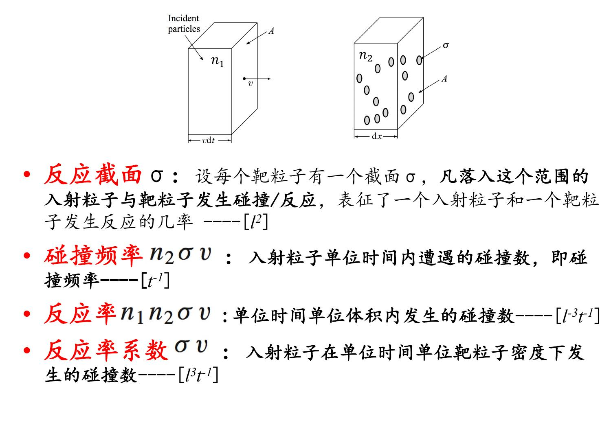
图中入射粒子以相对速度\(v\)扫过靶粒子。把每个靶粒子看成有一个“有效反应面积”\(\sigma\)，是帮助理解概率的唯象图像；真实核反应截面不是核的固定几何面积，也不是无量纲概率。
先假定速度单值、靶均匀、稀薄到可以忽略多重遮挡，且讨论的是同一种指定反应通道。在\(dt\)内，一个粒子扫过体积\(\sigma v\,dt\)，其中靶粒子的期望数是\(n_2\sigma v\,dt\)。于是：
| 物理量 |
表达式 |
单位 |
问的是什么 |
| 截面 |
\(\sigma\) |
\(\mathrm{m^2}\) |
指定能量下一对粒子的有效反应面积 |
| 单粒子碰撞/反应频率 |
\(\nu=n_2\sigma v\) |
\(\mathrm{s^{-1}}\) |
一个入射粒子每秒发生多少次该过程 |
| 反应率密度 |
\(R=n_1n_2\sigma v\) |
\(\mathrm{m^{-3}s^{-1}}\) |
每立方米每秒发生多少次反应 |
| 反应率系数 |
\(\sigma v\)，有分布时\(\langle\sigma v\rangle\) |
\(\mathrm{m^3s^{-1}}\) |
去掉两种密度后的反应性系数 |
| 聚变功率密度 |
\(S_f=RQ\) |
\(\mathrm{W\,m^{-3}}\) |
每立方米每秒释放多少焦耳 |
若有速度分布，不能随便拿某个“典型速度”代替所有粒子，要用\(\langle\sigma v\rangle\)。对同种粒子，每对只能算一次，因此
\[
R_{12}=n_1n_2\langle\sigma v\rangle_{12},\qquad
R_{11}=\frac12n_1^2\langle\sigma v\rangle_{11}.
\]
薄靶中\(\Delta N/N\simeq n_2\sigma h\)。若\(n_2,\sigma\)不随位置变且每次碰撞都使粒子离开原束流，\(dI/dx=-n_2\sigma I\)，得到\(I=I_0e^{-n_2\sigma x}\)、平均自由程\(\lambda=1/(n_2\sigma)\)，故\(\nu=v/\lambda\)。这里衰减的是原束流，不能自动解释成全系统能量消失。
自测：两种不同燃料的密度同时加倍，温度不变，反应率怎样变？
在反应率系数和其他条件不变时变为4倍。仅一种密度加倍则变为2倍。若温度、分布或约束随密度改变，就必须重新评价这些条件。
T02 · T03 · 来源
3. 用太阳芯部数值串起概念
课件p.6给出的是太阳芯部数量级估计，不是精确太阳模型：\(\sigma\sim10^{-54}\mathrm{m^2}\)、\(\langle\sigma v\rangle\sim2\times10^{-49}\mathrm{m^3s^{-1}}\)、\(n_p\sim3\times10^{31}\mathrm{m^{-3}}\)，对应温度约\(1.4\times10^7\mathrm K\)。
将各量依次代入：
\[
\nu=n_p\langle\sigma v\rangle=6\times10^{-18}\mathrm{s^{-1}},
\quad R_{pp}=\tfrac12n_p^2\langle\sigma v\rangle=9\times10^{13}\mathrm{m^{-3}s^{-1}}.
\]
完成一条净反应链需要两次p–p第一步，所以把净链放能\(26.7\mathrm{MeV}\)归到第一步计数上时，应使用\(26.7/2\mathrm{MeV}\)，不是给每一次第一步都乘26.7：
\[
S_f\simeq9\times10^{13}\times13.35\times1.602\times10^{-13}
\simeq1.93\times10^2\mathrm{W\,m^{-3}}.
\]
这个约200 W/m³的结果与课件一致，忽略了中微子能量逃逸等精细修正。\(1/\nu\)约为数十亿年，也说明单个质子的反应等待尺度很长。不能把这一芯部估计当成太阳全体平均功率密度。
课件第18页的p–p温度标签与第6页不一致；本节各数值对应约1400万K的太阳芯部，不能用于估计1000 K时的反应。
课堂强调：数值可以查，计算可以借助工具，但必须先知道所算量的定义及量纲，才能把方法用于另一个问题。
自测：上面为什么出现两次“除以2”？
反应率中的1/2消除相同质子对的重复计数；能量中的1/2来自一条净p–p链包含两次第一步反应。二者含义不同，不能相互代替。
T04 · 来源
4. 为什么不能照搬裂变的中子链式反应
裂变的两点优势是：一个中子触发后可能产生更多中子，因而能建立链式反应；中子不带电，没有带电核之间的库仑排斥势垒。因此燃料可以先以低温固体形式存在，触发反应不要求把全部燃料加热到聚变温度。不带电不等于不散射或不被吸收；能否自持仍取决于中子的增殖、俘获与泄漏平衡。
课件p.8的铀裂变式包括后续β衰变产物，是示例性总过程，不能把铈、锆及6个电子都视为一次瞬发裂变的唯一产物；反中微子等未在简式列出。课堂重心是链式反应和电中性，而不是记住唯一一组裂变碎片。
对轻核，课堂用两种假设性过程作比较：把氘拆成质子和中子虽能使出射中子增多，却需供能；俘获中子形成结合更紧的核可以放能，但消耗了中子，不能靠这一反应不断补足触发中子。这说明不能直接把这种轻核反应当作自持主能源，不说明中子在聚变系统中没有用。
例如，中子用于锂增殖氚，增殖材料也可用于中子倍增。课堂还提到加速器驱动系统（ADS）：外源持续供给中子，与无需外源补给的自持链式反应有区别。
读课件中的假设反应时，需要区分不同步骤：p.9把\(n+D\to{}^3He+e^-+6.27\mathrm{MeV}\)列为假设性放能式。它不能当作直接的强作用俘获通道；核素电荷改变涉及弱过程，实际\(n+D\to T+\gamma\)与后续氚衰变应分开理解。
自测：“轻核＋中子不能独立作为主能源”是否意味着增殖氚反应没有价值？
不是。主能源和燃料循环辅助反应承担不同功能；辅助反应可以利用主D–T反应提供的中子生产下一轮所需氚。
T06 · T08 · 来源
5. 候选聚变反应：先认清反应物和产物
符号约定：\(p\)为质子，\(n\)为中子，\(D={}^2H\)为氘核，\(T={}^3H\)为氚核，\(\alpha={}^4He\)为氦-4核；这里讨论的是核，而非带电子的中性原子。
| 反应 |
放能Q / MeV |
直接产物的提示 |
| \(D+D\to{}^3He+n\) |
3.267 |
有中子 |
| \(D+D\to T+p\) |
4.032 |
产生放射性氚 |
| \(D+T\to\alpha+n\) |
17.6 |
带电α与中子各一个 |
| \(D+{}^3He\to\alpha+p\) |
18.3 |
主反应产物都带电 |
| \(p+{}^6Li\to{}^3He+\alpha\) |
4.022 |
要检查后续反应 |
| \(p+{}^9Be\to\alpha+{}^6Li\) |
2.125 |
要检查后续反应 |
| \(p+{}^9Be\to D+2\alpha\) |
0.652 |
放能较少 |
| \(p+{}^{11}B\to3\alpha\) |
8.664 |
主反应无中子 |
D–D两个主要通道在课程讨论范围内分支比大致相等，不能当作所有能量下严格50%/50%。D–T和D–³He形成结合牢固的α粒子，单次放能较高；比较燃料储能密度时还要除以参加反应的核子数，不能只比一行Q。
课堂还列举T–T、³He–³He、三α合成碳及硅逐步俘获α的恒星过程。一般向更重、带电数更高的核推进时，库仑障碍加大，比结合能曲线的增益也趋缓，因此更困难；这是一条趋势，不是对每一个反应的严格排序。“烧石头”是影视联想，不是地面反应堆可行性证据。课件列出的三α放能数值用于示意，精确计算应查相应核数据。
自测：只看到D–³He方程式中没有n，能否宣布该装置没有中子？
不能。方程式只描述主通道，还要检查混合燃料中D–D等伴生反应，以及产物继续参与的反应。
T09 · T11 · 来源
6. 三个评价维度：燃料、产物、产能
从反应式左边看燃料：是否天然存在、是否丰富且容易取得、是否有放射性、是否会在燃料循环或真空系统中冷凝。课堂用“极难得到的仙草”说明：只证明存在，远远不够证明有能源价值。
从右边看产物：是否稳定、有无中子、携能粒子能否受电磁场作用。中子通常先把能量转成材料中的热，再通过热循环利用；带电产物提供直接能量转换的可能性，但“可能直接转换”不等于已经实现高效率电站。
再看功率密度：
\[
S_f=n_1n_2\langle\sigma v\rangle Q.
\]
密度由约束等条件限制；反应性要同时看曲线有多高、在什么温度下够高；Q表示每次反应能贡献多少能量。反应率系数的峰值温度不是电站最优工作温度，后者还涉及加热成本、辐射、约束与压力限制。
理想反应应当兼具高反应性、高放能、天然丰富且易处理的燃料、低放射性和便于取能的产物。实际反应不能把这些要求全部满足，所以选择必然涉及权衡。
自测：某反应的峰值反应率系数更高，为什么仍可能不优先？
如果达到这一峰值需要极高温度，付出的加热与约束代价、辐射损失可能更大；燃料获得和产物处理也可能困难。
T12 · T13 · T20 · 来源
7. 从硬球截面到真实截面曲线
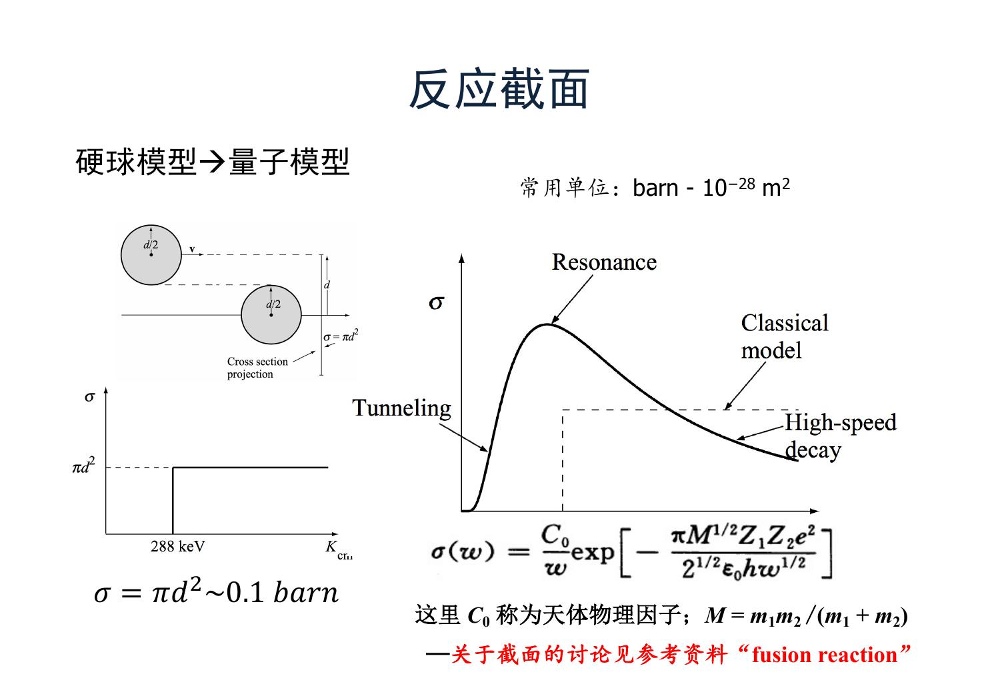
硬球图像用\(\sigma\sim\pi(r_1+r_2)^2\)估计接触面积，核尺度下约为0.1 b数量级，\(1\mathrm b=10^{-28}\mathrm{m^2}\)。经典示意图在能量不足时过不了势垒，达到门槛后才有几何碰撞。
真实曲线有三类读图线索：低能端仍有量子隧穿概率，但降低能量会急剧压低反应性；中间可能出现核能级共振，使截面超过简单硬球估计；高能端截面也不保证继续增长。课件用相互作用时间变短解释高能衰减，这是定性图像，不能把聚变截面和库仑散射截面混为同一条曲线。
教材给出的参数化形式为
\[
\sigma(E)=\frac{S(E)}{E}\exp\!\left(-\sqrt{\frac{E_G}{E}}\right).
\]
\(E\)是质心系相对动能，\(E_G\)表征库仑隧穿抑制，\(S(E)\)是天体物理S因子，单位为能量乘面积。平滑、无强共振的有限能区才适合把S近似为缓变值；实际数值应以数据或合适拟合为依据，不能用常数S模型抹掉共振。
自测：量子隧穿是否意味着任意低温都能得到有用功率？
不是。“概率非零”和“反应率足以超过损失”是两件事。低能端概率可能小到没有工程价值。
T14 · 来源
8. 截面比较必须先统一能量坐标
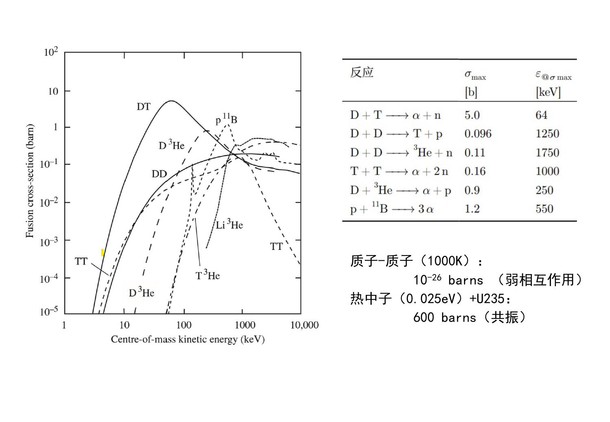
横轴是质心系动能E，纵轴是截面b，均采用对数刻度。读同一能量下的曲线高低，再比较峰值位置；不能把纵轴“更高”与横轴“更靠左”当成一回事。
| 反应 |
课件最大截面 / b |
对应质心能量 / keV |
| D–T |
5.0 |
64 |
| D–D → T+p |
0.096 |
1250 |
| D–D → ³He+n |
0.11 |
1750 |
| T–T |
0.160 |
1000 |
| D–³He |
0.9 |
250 |
| p–¹¹B |
1.2 |
550（课件近似值） |
课程中的数量级分组是：D–T峰高且靠低能区；D–D、T–T约0.1 b并在更高能区；D–³He、p–¹¹B约1 b。表中不同能量处的两个D–D最大值不能直接相加当作某个能量处的总截面。
p–¹¹B的峰值能量在课件中为550 keV，教材表中却为5500 keV，与其“数百千电子伏”的文字也不一致。此处用于数量级比较；精确计算前须另查该项数据。
换算能量坐标时，设粒子1入射、粒子2静止，约化质量\(\mu=m_1m_2/(m_1+m_2)\)，则
\[
E_{\rm cm}=\tfrac12\mu v^2
=\frac{m_2}{m_1+m_2}E_{\rm lab}.
\]
例如D束打静止T靶，\(E_{\rm cm}\simeq3E_{\rm lab}/5\)。因此64 keV的质心能量对应约107 keV的D束能量；若是T束打D靶，换算系数就不同。峰值截面本身不会因换坐标改变，横坐标会改变。
自测：20 keV的D束打静止T靶，对应质心能量是多少？
约12 keV。20 keV也不能直接解释为两种燃料都处于20 keV热平衡温度。
T15 · T16 · 来源
9. 速度分布为何改变反应率系数
设\(f_j(\mathbf v_j)\)满足\(\int f_j\,d^3v_j=n_j\)。令相对速度\(u=|\mathbf v_1-\mathbf v_2|\)，则不同粒子反应的系数为
\[
\langle\sigma u\rangle=
\frac1{n_1n_2}\iint f_1(\mathbf v_1)f_2(\mathbf v_2)
\sigma(u)u\,d^3v_1d^3v_2.
\]
含义是：逐对考虑相对速度，把“碰到的概率”和“单位时间扫过的长度”相乘，再按两种速度分布加权。不能用\(\langle\sigma\rangle\langle u\rangle\)替代相关的乘积平均。
下面推导常用的热平衡形式。设两种粒子同温、各向同性、无相对漂移且满足麦克斯韦分布。为避免混淆，以\(\Theta=k_BT_{\rm K}\)表示能量单位温度。
\[
f_j=n_j\left(\frac{m_j}{2\pi\Theta}\right)^{3/2}
\exp\!\left(-\frac{m_jv_j^2}{2\Theta}\right).
\]
变换到质心速度\(\mathbf V=(m_1\mathbf v_1+m_2\mathbf v_2)/(m_1+m_2)\)与相对速度\(\mathbf u=\mathbf v_1-\mathbf v_2\)。变换的雅可比绝对值为1，且
\[
m_1v_1^2+m_2v_2^2=(m_1+m_2)V^2+\mu u^2.
\]
因此质心积分可以单独归一化消去，剩下相对速度积分：
\[
\langle\sigma u\rangle
=4\pi\left(\frac{\mu}{2\pi\Theta}\right)^{3/2}
\int_0^\infty u^3\sigma(u)e^{-\mu u^2/(2\Theta)}du.
\]
再令\(E=\mu u^2/2\)，由\(u^3du=2E\,dE/\mu^2\)，得到
\[
\boxed{\langle\sigma u\rangle=
\sqrt{\frac8{\pi\mu}}\,\Theta^{-3/2}
\int_0^\infty E\sigma(E)e^{-E/\Theta}\,dE.}
\]
使用SI时E、Θ必须用J，不能把keV数值直接塞进SI质量和速度的公式。非同温、束靶或漂移分布要回到一般积分，而不是照搬最后这个同温公式。
自测：本式中为何用约化质量，而不是任意选择氘质量？
核反应取决于两粒子的相对运动。分离质心运动后，相对动能是μu²/2，故相对速度分布及能量换元都包含约化质量。
T17 · 来源
10. 高能尾部与工作温度：三个峰值不要混用
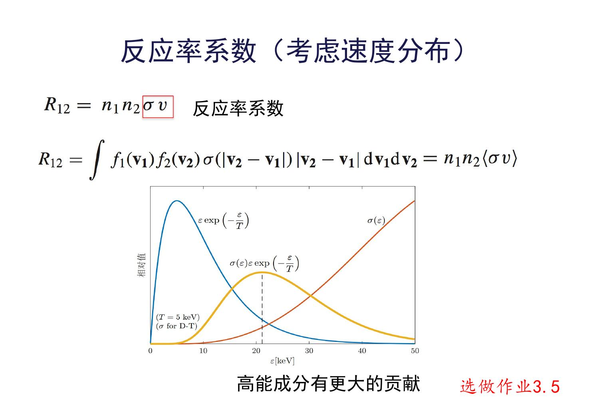
读图时分清蓝色的\(Ee^{-E/\Theta}\)、随能量上升的截面\(\sigma(E)\)和二者乘积。T=5 keV示例中，单能贡献\(E\sigma(E)e^{-E/\Theta}\)的峰落在更高能量处：高能粒子较少，但反应截面较大，两者竞争产生主要贡献能区。这里的蓝线不是完整的粒子能量概率密度，黄线也不是“所有温度下的反应率系数曲线”。
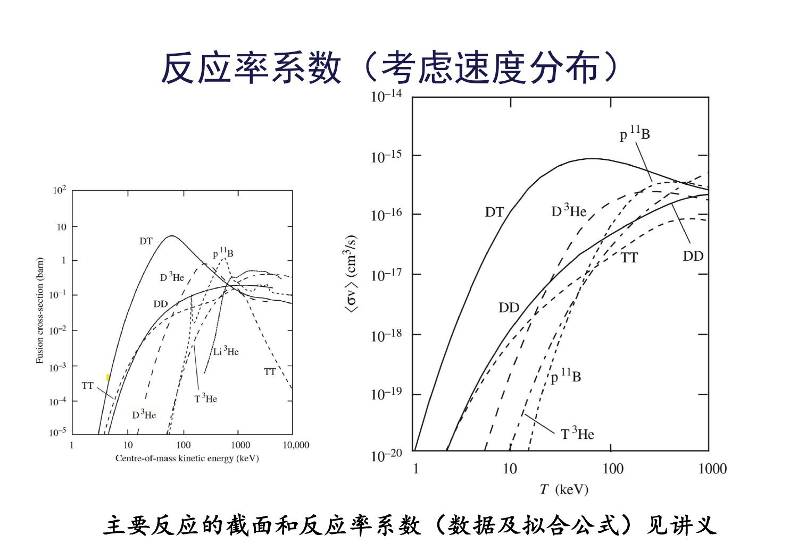
第二张图左边横轴为单对粒子的质心能量，右边横轴为整个分布的温度；右边纵轴使用\(\mathrm{cm^3/s}\)，转为\(\mathrm{m^3/s}\)应乘\(10^{-6}\)。例如\(10^{-15}\mathrm{cm^3/s}=10^{-21}\mathrm{m^3/s}\)。不能把两图横坐标机械相等。
应分清：①\(\sigma(E)\)峰值能量；②固定温度下积分被积函数的主要贡献能量；③\(\langle\sigma v\rangle(T)\)峰值温度。高能尾部让较低温度的燃料中仍有较有效的反应粒子，但不保证任意截面函数都具有同样的“左移”规律。
印刷p.22–23给出D–T在8–25 keV附近的拟合
\[
\langle\sigma v\rangle_{DT}\simeq1.1\times10^{-24}T_{\rm keV}^2\ \mathrm{m^3/s}.
\]
例如10 keV时约\(1.1\times10^{-22}\mathrm{m^3/s}\)。这只是有限区间近似，不能外推到任意高温去断言反应性无限增长。
自测：D–T截面在约64 keV达到最大，为什么不要求每个粒子都有64 keV？
热燃料有速度分布；反应率取加权积分，不是要求所有粒子处在最大截面能量。实际工作温度还取决于能量收支。
T18 · 来源
11. 能否从核物理上提高反应性
课堂列举核极化、核散射及强场调控。按课件，D和T自旋都沿外磁场极化时，有效反应截面可比非极化情形提高约50%。难点在于实现并维持所需极化状态；“理论上增加50%”不能自动兑换成整堆净功率增加50%。
教材所说核散射效应，是高能带电产物向燃料粒子传递能量、改变后续反应率的过程，不能简单改写成“任意高能散射都增加融合概率”。强场对隧穿与S因子的影响在材料中属于研究方向，尚需理论和实验验证。
课堂采取数量级分析：这些效应值得研究，但本课程后续基本能量平衡不会因几十个百分点的改进而失效。
自测：截面增加50%，是否足以证明某方案能净发电？
不足。还需把极化、加热和控制的代价、维持时间及各种能量损失计入。
T19 · 来源
12. D–T：先争取最高反应性
\[
D+T\to\alpha+n+17.6\ \mathrm{MeV}.
\]
本讲比较中，D–T的优势是相对较低温度下反应性最高，每个核子约释放\(17.6/5=3.52\mathrm{MeV}\)。其代价是氚需要制备、具有放射性，而且大部分能量由中子携带。因此它是课程所述第一代聚变堆的优先选择，而非所有指标最理想的反应。
氚半衰期约12.3年。按指数衰变计算，一年后剩余比例\(2^{-1/12.3}\)，一年衰减约5.48%；12.3年后剩一半，不能写成“12年就没了”。课件p.24的50 kg/y对应1000 MW装置，是量级数；需明确功率口径。
再估算一年的燃料消耗。若1000 MW指连续运行一年的D–T聚变反应功率，每次消耗一个T核，
\[
N=\frac{10^9(365\times86400)}{17.6\times10^6\times1.602\times10^{-19}},
\quad m_T\simeq N\times3u\simeq56\mathrm{kg}.
\]
这与课件50 kg/y同量级，但不是电功率1 GW的统一耗氚量，也不是装置内库存或燃料循环吞吐量；后两者还取决于燃烧率和回收过程。
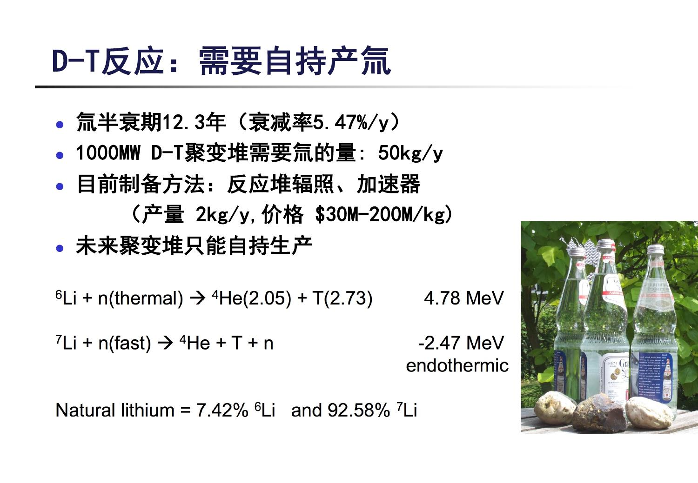
\[
{}^6Li+n\to\alpha+T+4.78\mathrm{MeV},
\qquad{}^7Li+n\to\alpha+T+n-2.47\mathrm{MeV}.
\]
前者放热并消耗中子，后者需要快中子且吸热、出射仍有中子。完整设计要评价中子能谱、损失、材料和氚回收，不能只看Q的正负。课件天然锂丰度数字按材料值保留；氚产量与价格按授课时点理解，不能视为固定供应条件。
自测：为什么D–T有中子，仍需要专门设计增殖包层？
产生中子不等于每个中子都能被有效用于产氚。泄漏、竞争吸收和氚提取损失都会影响自持燃料循环。
T21 · T23 · 来源
13. 两体产物为什么由较轻粒子带走更多能量
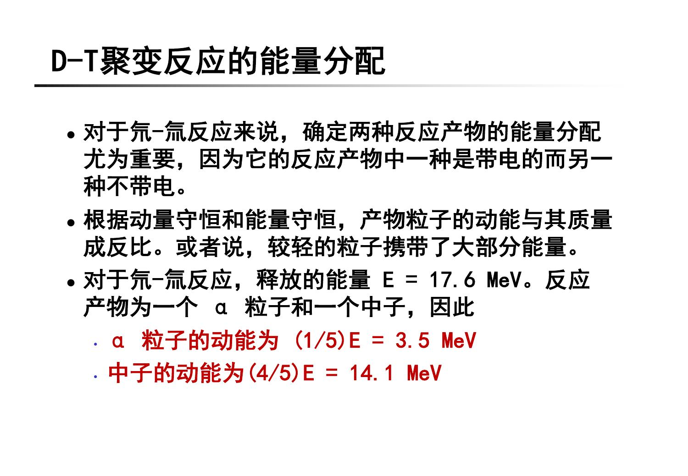
在质心系中，两个产物动量大小相等、方向相反。忽略入射动能相对Q的修正，采用非相对论近似，
\[
K_a=\frac{p^2}{2m_a},\quad K_b=\frac{p^2}{2m_b},\quad K_a+K_b\simeq Q.
\]
所以\(K_a/K_b=m_b/m_a\)，并有
\[
K_a=\frac{m_b}{m_a+m_b}Q,\qquad K_b=\frac{m_a}{m_a+m_b}Q.
\]
D–T中\(m_\alpha:m_n\simeq4:1\)，故\(K_\alpha\simeq3.5\mathrm{MeV}\)、\(K_n\simeq14.1\mathrm{MeV}\)。α约占20%，在适当约束下可加热燃料；中子约占80%，通常在包层中沉积能量并参与增殖。两体公式不能直接按质量分配给p–¹¹B的三个α；实验室系中产物能量还可能依方向而变。
D–D中子支路同理：\(K_n\simeq(3/4)3.267=2.45\mathrm{MeV}\)。这与D–T的14.1 MeV中子不同，是反应诊断中有用的区别。
自测：α质量更大，为什么其动能更小？
约束条件是两体质心系动量相等，不是速度相等。固定动量时动能p²/(2m)与质量成反比。
T24 · 来源
14. D–T的放射性：燃料与材料活化分别看
D–T系统的放射性来源至少分两部分：氚本身，以及高能中子使包层和结构材料转变成放射性核素。停止主聚变反应后，中子产生会停止，但已经活化的材料仍会继续衰变，不能概括为“关机后就没有辐射”。活化产物的半衰期与成分、杂质和照射历史有关，不应一律写成十几年或几十年。
氚发出低能β辐射，外照射穿透弱，但含氚物质可经摄入、吸入等进入体内；内照射影响需要结合活度、化学形态和剂量判断。NRC氚与辐射防护说明
自测：“低能β”为什么不等于“无需管理氚”？
穿透能力弱主要说明外照射特点；核素进入体内后仍可能造成内照射。另需考虑燃料泄漏、回收和材料中的滞留。
T25 · T26 · 来源
15. D–D：丰富的燃料不自动带来容易的反应
氘是天然稳定同位素。课件给出丰度\(1.53\times10^{-4}\)，约每7000个氢原子中有一个氘。几种制备与处理方法利用的物理差异不同：蒸馏利用同位素水的蒸气压差；电解利用不同同位素在析出氢与剩余水中的分配差；双温置换利用平衡随温度改变；金属氢化物床可用于净化及同位素处理。
若两个D–D支路等概率，平均每次放能\((3.267+4.032)/2=3.6495\mathrm{MeV}\)，参与核子数为4，平均每核子约0.91 MeV。中子支路会产生2.45 MeV中子，另一支路产生T，因此“原料没有放射性”不能推成“系统没有放射性”。
真正困难在于D–D的反应性：达到足够反应率的条件比D–T苛刻。海水燃料丰富是长期资源优势，不能替代点火、约束及经济性验证。
自测：平均每次D–D放能为什么不是3.267+4.032？
单次反应只走一个支路；支路大致等概率时应取平均。把两支路各发生一次作为一个组合过程时才相加。
T27 · 来源
16. 催化D–D：把中间产物继续烧掉
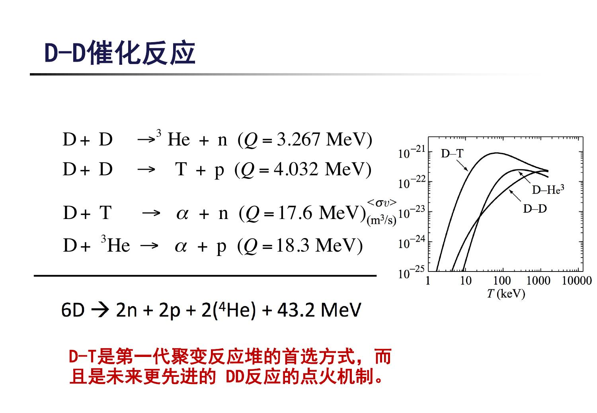
D–D生成的T和³He可以继续与D反应。保留D–D两支路和D–T，叫半催化；再让³He也与D反应，叫完全催化。这里“催化”是课程沿用名称，T与³He是会被产生、再被消耗的中间核素，不是化学意义上原样循环的催化剂。
把反应式相加，两个D–D支路各一次消耗4D，生成T、³He、p、n；再用1D烧T、1D烧³He，消去中间核素，得到
\[
6D\to2\alpha+2p+2n+43.2\mathrm{MeV}.
\]
12个核子释放约43.2 MeV，平均3.6 MeV/核子。两个中子大约携带\(2.45+14.1=16.55\mathrm{MeV}\)，中子份额约38.3%，带电产物约61.7%，与课件61.8%相符（取整差异）。
半催化净式是\(5D\to2n+p+\alpha+{}^3He+24.9\mathrm{MeV}\)。完全催化相比多利用了D–³He通道，因此单位核子放能与带电粒子能量比例更高。
课堂用“带电产物转换效率若有80%”作思想实验：\(0.618\times0.8\simeq49.4\%\)的总聚变能有望走这一转换路径。原话用60%取整得到48%；这不是实测净发电效率，还未扣除循环功率，也不免除中子的屏蔽与热管理。
理想完全燃烧、回收平衡时，可免去单独的锂增殖T需求；但“自产自销”不等于T瞬时库存为零、泄漏不必控制。课堂用火柴—引火物—煤作比喻：先由D–T加热，再达到D–D等更高温条件，是未来设想，不能写成现成升级方案。
自测：完全催化D–D为什么仍需要辐射防护？
净产物仍有中子，过程中仍产生和消耗氚，材料仍可活化。无需外部持续补氚不等于没有氚。
T28 · T30 · 来源
17. D–³He：“主反应无中子”与“反应堆无中子”
\(D+{}^3He\to\alpha+p+18.3\mathrm{MeV}\)的燃料稳定、直接产物带电，单次放能高。这使直接能量转换有吸引力。但混合燃料中的D仍会相互反应，产生中子和T，T还可能继续走D–T通道。
用反应率可以看清燃料配比的权衡：
\[
\frac{R_{DD}}{R_{D{}^3He}}
=\frac{n_D}{2n_{{}^3He}}
\frac{\langle\sigma v\rangle_{DD}}{\langle\sigma v\rangle_{D{}^3He}}.
\]
降低D相对³He的比例可以降低D–D相对主反应的份额。若在总离子数密度固定时从等份混合开始提高³He占比，\(n_Dn_{{}^3He}\)也下降，主反应功率受影响。固定总密度、电子密度还是压力，限制不同，最优配比也不同；不能省略约束条件。
³He的供给同样困难。课件“地球无储备”宜理解为可用资源极稀少，不能理解成地球完全不存在³He。教材列出D–D生产、T衰变和地外资源等来源讨论。月球采集、运输以及太空建堆在课堂属于畅想，冷环境也不自动消除装置的辐射热负荷或制冷需求。
自测：只提高³He比例而不说明其他条件，为何不能断言绝对功率一定降低？
功率由两种绝对密度的乘积决定。必须说明是固定总密度、压力等条件下改变配比，还是额外加入燃料。
T31 · T33 · 来源
18. 质子燃料与氢硼：换一种优势，也换一种困难
p–⁶Li、p–⁹Be主通道不放中子，但放能较低，次级反应可带回中子和放射性产物。例如课件列出\({}^6Li+{}^6Li\to n+\alpha+{}^7Be\)，提醒我们必须检查全部重要通道。
p–¹¹B的主反应生成三个α，燃料来自天然同位素、直接产物稳定且带电，因此被作为先进燃料讨论。但它要求更苛刻的反应条件，硼的冷凝会影响燃料与真空系统；低中子份额也不等于绝对零中子，教材明确提到微弱次级反应。
课堂提到“电子与离子等温时，氢硼没有点火温度”，作为下一讲辐射损失的预告。这一判断需在后续电子、离子同温的功率平衡模型中理解，不能推广到所有非热或非等温方案。截面峰值与点火要求是不同的问题。
³He–³He也能产生带电稳定产物，但面临³He供应与反应性限制，课堂未深入展开。“三个α作为产物”也不同于恒星中“三个α合成碳”的三α过程。
自测：氢硼无中子优势能否直接推出比D–T更容易实现？
不能。它缓解一部分产物处理困难，却带来更苛刻的温度与功率平衡问题。评价必须同时看反应性、燃料和产物。
T34 · T36 · 来源
19. 散射与轫致辐射：从“发生聚变”到“获得净能量”
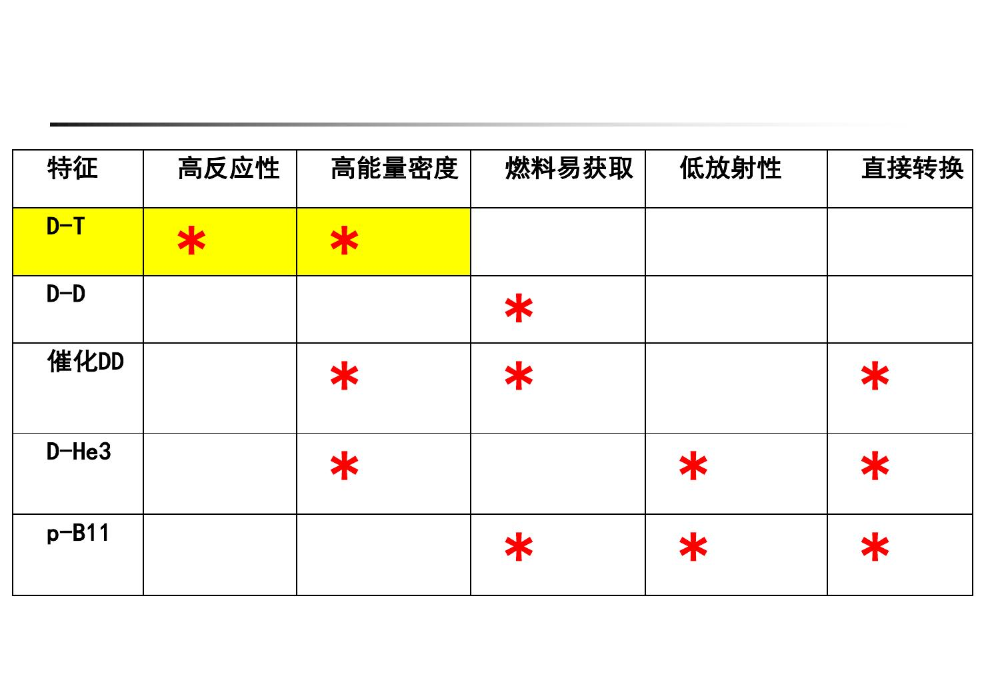
表中的星号表达相对优势，不是合格认证：D–T突出反应性与放能；D–D突出燃料；催化D–D增加放能和带电份额；D–³He、p–¹¹B偏重产物电性。教材表3.3写“无须放射性屏蔽”，课件p.38改为“低放射性”；应结合伴生反应理解低放射性的含义，不能按“无需屏蔽”理解。
课堂选择D–T的逻辑是先跨过能量收支门槛。对于带电粒子，聚变以外更常发生的是库仑散射。束流打靶时，输入能量可能先转给靶、使束流减速或偏离，而没有发生聚变，所以“Q远大于单粒子入射能量”不足以证明净得能。
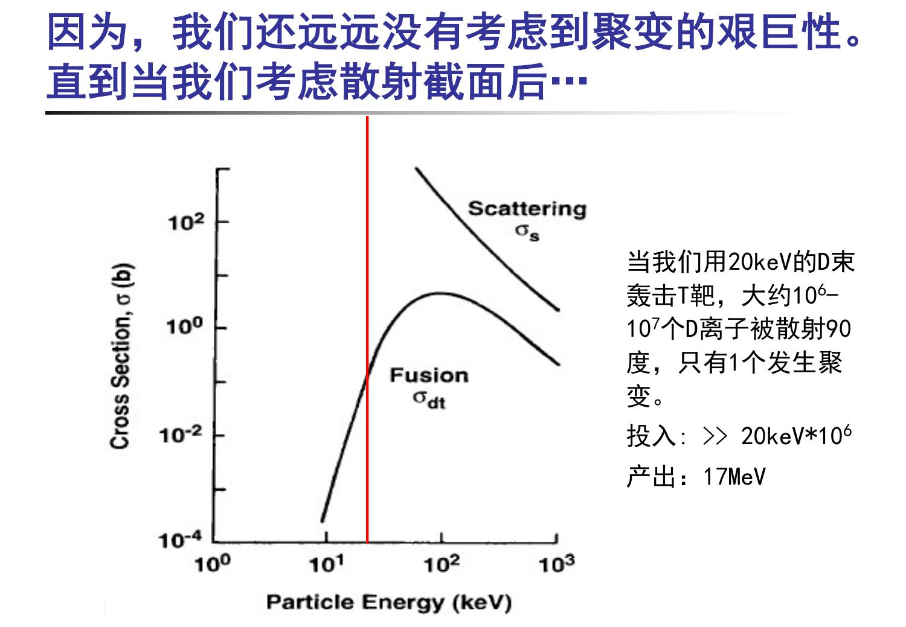
p.40文字说20 keV D束打T靶时，约\(10^6\)–\(10^7\)次90°散射对应一次聚变，但该页曲线在标记能区并不能直接读出这一差值。因此该比例尚不宜用于精确计算。散射截面必须说明角度阈值、坐标系、屏蔽截断以及是总截面还是输运截面。
经典两体散射可以写为：取\(\kappa=Z_1Z_2e^2/(4\pi\epsilon_0)\)，相对动能\(E=\mu v^2/2\)，碰撞参数为b，则
\[
b=\frac{\kappa}{2E}\cot\frac\chi2,
\quad b_{90}=\frac{\kappa}{2E}=\frac{\kappa}{\mu v^2},
\quad \sigma_{\chi\ge90^\circ}=\pi b_{90}^2.
\]
这适用于经典库仑两体散射的相应近似，不含所有小角散射。将\(b_{90}\)代入可得\(Z_1^2Z_2^2e^4/(16\pi\epsilon_0^2\mu^2v^4)\)。整理分母时须注意，截面中的π与碰撞参数平方中的π²约去一个因子。
系统边界很关键：在理想封闭的热等离子体中，弹性散射主要重新分配动能，不是每次散射都使总能量离开系统。束靶损失图像不能直接乘以散射次数当作热核装置的总损失。另一方面，带电粒子加减速会产生辐射；本讲所指过程是轫致辐射，与泛指温度相关的热辐射概念应加以区分。
下讲才系统建立热核聚变功率产生与损失、净能量收支。本讲的终点是知道必须做能量平衡，而非仅凭反应式证明发电成立。
自测：为什么Q大于20 keV，仍不能证明20 keV束靶聚变可以净发电？
不是每个入射粒子都会聚变；必须乘上反应概率并计入减速、散射、辐射及加速效率等。换成受约束热体系时，又必须重新定义哪些能量真正流出系统。
T37 · T40 · 来源
20. 作业与复习要求
课件p.43指定：3.2、3.3、3.4；3.5选做。题面见教材印刷第28–29页（PDF第32–33页）。
| 题号 |
练习内容 |
原页 |
| 3.2 |
氢硼反应能量的题设与要求见原题 |
PDF32 |
| 3.3 |
催化D–D释放能量的分配、据此设想取能方式，并与D–T比较 |
PDF32 |
| 3.4 |
D–³He体系中D–D次级反应产生2.45 MeV中子；D:³He浓度比1:1、1:2、1:3时中子携能份额 |
PDF32 |
| 3.5（选做） |
参照式(3.19)，比较同温双热平衡、静止T＋热D、静止T＋单能D束、热T＋单能D束的反应率系数与温度/能量关系；束能列为5、10、20、50、100、500 keV |
PDF32、续页33 |
3.4题面没有直接给出反应率系数所需温度，计算前需要说明数据、温度及是否计入后续D–T的约定，不能只凭配比唯一算出数值。3.5一般情形需从速度积分出发，单能束不能无条件套同温麦氏结果。
课堂要求复习库仑散射，复习或预学轫致辐射；理解基本量纲，读懂查表的坐标系。课堂互动题强调参与与思考，不以答对率作为唯一目的。
完成数值作业还需要附录A的核数据与拟合式，当前资料未包含该附录。涉及下一讲能量平衡时，还需配合第4章；计算前应确认所用数据、分布和单位。
T11 · T18 · T40 · 来源
课堂回顾
本页按课堂顺序回顾讲解，可查看对应课件、跳转到相关讲义，并定位播放录音。
来源与订正
T01 · 回顾：太阳给我们的启示
时间：00:00–01:24。课件PDF：4页。讲义N01
展开对应课件页
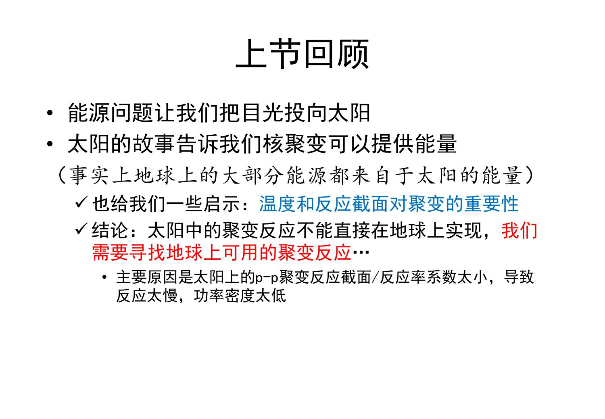
PDF 第 4 页前两节课的相关内容可以在课件中找到。今天继续讲地球上可用的能源。上节课从能源问题讲到太阳：太阳告诉我们核聚变能提供能量，地球上大部分能源也来自太阳。在发现太阳能量来源的过程中，我们认识到温度和反应截面很重要。
太阳的条件在地球上很难达到；即使达到类似条件，p–p反应的截面仍太小，反应很缓慢，功率密度太低，不适合作为地球上的能源方式。下面把几个很重要的概念快速复习一遍。
T02 · 反应截面与单粒子碰撞频率
时间：01:24–03:17。课件PDF：5页。讲义N02
展开对应课件页
PDF 第 5 页先看反应截面。设两个粒子相碰，通常先假设靶粒子不动，让入射粒子去打它。可以把靶粒子想象成具有一个“势力范围”：入射粒子落入这个有效面积，就发生指定碰撞或反应。这是典型的唯象物理图像，用来表征入射粒子与靶粒子发生反应的概率。大家要有单位和量纲的概念，截面的量纲是面积。
与它相比，碰撞频率的物理意义更直接：靶粒子数密度乘截面，再乘入射速度。这里的速度可以理解为两粒子的相对速度。这个量说明一个入射粒子每单位时间遭遇多少次碰撞。
怎么推导？在dt内走过的长度是vdt，乘σ得到体积，再乘靶粒子密度得到这个体积内粒子的数量，也就是该时间内碰撞次数的期望。除以dt，单位就是时间的负一次方，所以叫频率。
T03 · 反应率、功率密度与反应率系数
时间：03:17–06:07。课件PDF：5页。讲义N02
展开对应课件页
PDF 第 5 页如果入射粒子也有数密度，再乘这个密度，就得到单位时间、单位体积发生的反应数。它的量纲是长度的负三次方乘时间的负一次方，即每立方米每秒。这就是反应率。
再乘每次反应释放的能量，就得到单位时间、单位体积产生的能量，也就是功率密度。不能只看公式，要从每个量的意义理解这个关系。
把两种粒子密度拿掉，剩下的σv称反应率系数；温度、相对运动和反应自身的特征体现在这里。反应率系数的量纲是体积每秒。若一定要解释，可以说是单位靶粒子数密度下，单个入射粒子的碰撞频率系数；但这个“单位密度”是假设条件，物理意义没有实际碰撞频率那么直接。因此从碰撞频率、反应率倒过来理解这个系数，更容易。
后面的相关专业课都会碰到反应截面和反应率。如果现在还不清楚，一定要把这些概念弄明白。
T04 · 太阳p–p反应的数量级与学习要求
时间：06:07–08:54。课件PDF：6页。讲义N03
展开对应课件页
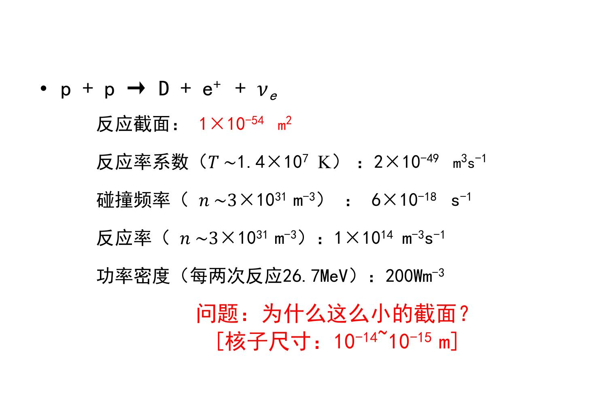
PDF 第 6 页用太阳p–p链的第一步反应来算，这些概念就很直接了。课件给出的截面约为10⁻⁵⁴ m²；太阳温度约1400万K时，反应率系数约为2×10⁻⁴⁹ m³/s。再乘太阳芯部的质子数密度，可得碰撞频率约6×10⁻¹⁸ s⁻¹。
再乘一次密度得到反应率，但这里是质子和质子反应，同一对粒子会被重复计数，所以要除以2，结果约为10¹⁴ m⁻³s⁻¹。回想上次的反应链，四个质子合成一个氦核，净释放26.7 MeV；每完成这条链，要有两次这里的第一步反应。所以可以估出太阳芯部功率密度约200 W/m³。
这些东西都是可以算的，前提是概念清楚。数值不记得可以查，但知道概念才能知道怎么算。现在可以问大语言模型一个数，它也会给出答案；可如果只是接受别人告诉你的结果，下次遇到另一个问题仍不会做，就没有学到思考方法。基本概念一定要掌握。
为什么太阳功率密度这么小？关键仍在截面。即便把原子核看成硬球，几个费米的尺度给出的几何截面也远大于这里的p–p反应截面。
T05 · 弱相互作用为什么不适合作为地面主反应
时间：08:54–10:49。课件PDF：6,7页。讲义N01
展开对应课件页
PDF 第 6 页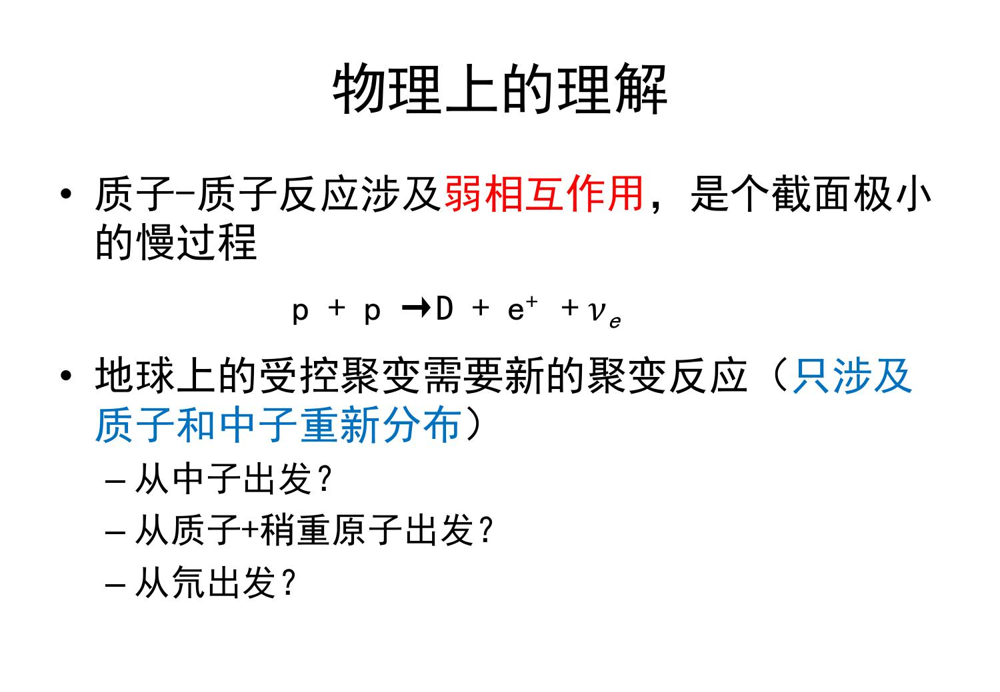
PDF 第 7 页两个核即使在几何上碰到一起，也不一定发生所需的弱相互作用。p–p反应中这种转换的概率，比两核直接相遇的概率还小很多，所以这是一个截面极小的过程。
在地球上利用聚变，如果主反应依赖这样的弱过程，就会导致很小的反应率和功率密度。因此这里希望避开质子、中子相互转化这一慢步骤，只让已有的质子和中子重新排列：接近到核力作用范围，形成融合状态，再成为结合更稳定的结构。需要长时间的那部分工作交给恒星；地球作为行星，没有恒星那样的条件。
T06 · 从中子出发：裂变的两个优势
时间：10:49–15:40。课件PDF：8页。讲义N04
展开对应课件页
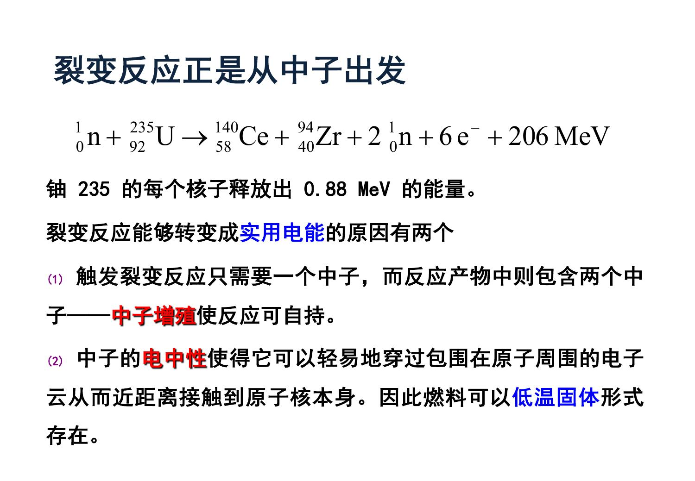
PDF 第 8 页既然考虑质子和中子重新排列，可以先从中子出发。同学们在核工程原理中熟悉的裂变就是例子。课件列的是铀-235裂变的一个典型代表，实际会有许多不同的碎片组合，不是只有这一种反应。这个示例释放中子，放出约206 MeV能量。
从能源角度看，裂变为什么很快走向实际利用，而聚变困难得多？课堂请大家想几个原因。第一，触发时一个中子，产物可以有更多中子，于是形成链式反应。容易持续也意味着必须控制，容易发生与安全控制往往是一对需要同时考虑的问题。
同学提到能量门槛低、截面高。再追问原因，就是中子不带电。这非常重要：它不用先克服两个带电核之间的排斥，可以比较容易地接近核，不要求给整个燃料很高温度。裂变燃料可以在低温固体状态下存在，而聚变后面要面对很高温度的要求。中子是否被其他物质俘获，则会影响链式过程能否持续。
T07 · 轻核与中子的两种假设性反应
时间：15:40–18:23。课件PDF：9页。讲义N04
展开对应课件页
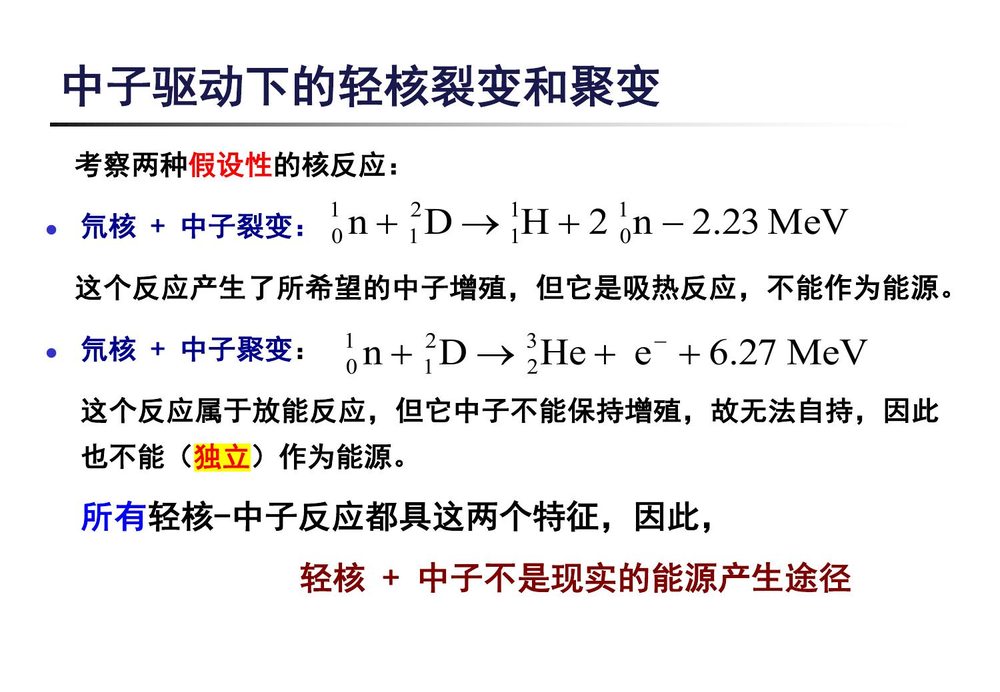
PDF 第 9 页聚变能不能也从中子出发？先假设用中子把一个氘核拆开，产生两个中子。这样虽然得到中子增殖，但由结合能关系可知它需要吸收能量，不能作为放能主反应。
如果中子被轻核吃进去，形成结合更紧的核，可以放能；但它又不会把触发中子持续增殖出来。所以这种反应不能独立作为自持的能源。如果外面持续提供中子源，当然仍可以发生放能过程，只是必须配套另一个系统。
课堂举加速器驱动系统的例子：借助外源中子去驱动反应、提高某些核燃料的利用，但其实际应用还有许多问题。后面产氚的过程也是中子参与的反应，可以放热。
T08 · 不能做主反应，不等于系统中没有用
时间：18:23–19:52。课件PDF：9,10页。讲义N04
展开对应课件页
PDF 第 9 页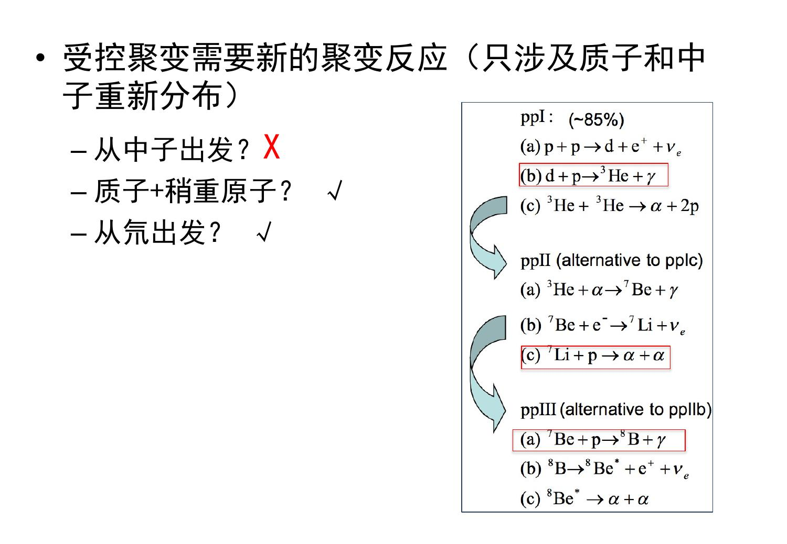
PDF 第 10 页这里讨论的轻核与中子反应，要么实现中子增多但需要吸能，要么吃掉中子、形成结合更紧的核并放能。前一种也不是完全无用，后面会用中子倍增材料，让一个中子带来更多中子，以便支持增殖过程。
所以我们说它不能像裂变一样，独立成为这里所找的自持主能源，不是说这些反应不会出现在聚变体系里。既然单从中子出发面临这类问题，就再看质子与稍重核，以及氘出发的反应。
T09 · 从质子、氘出发筛选反应
时间：19:52–22:40。课件PDF：10,11,12页。讲义N05
展开对应课件页
PDF 第 10 页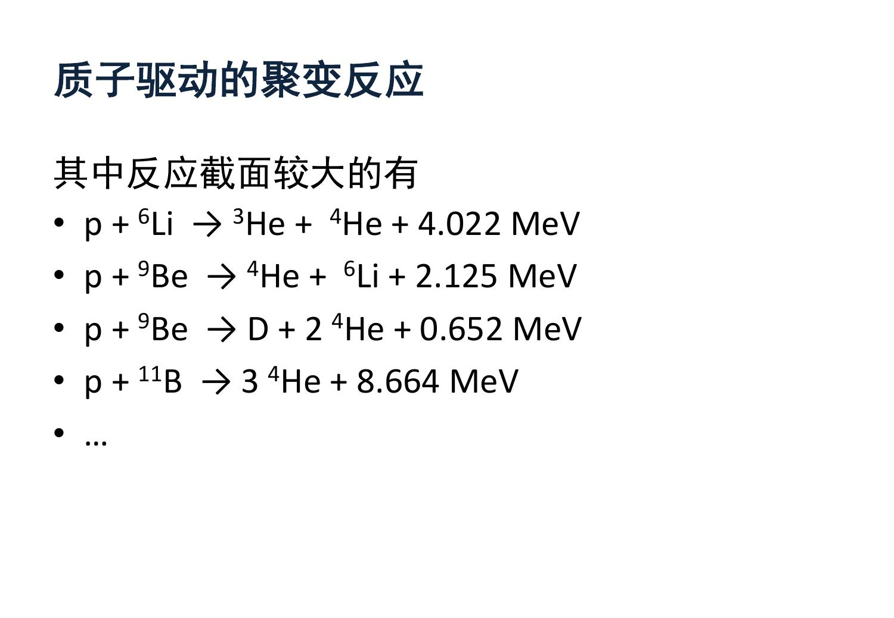
PDF 第 11 页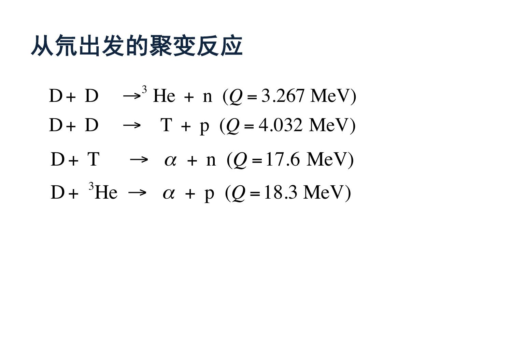
PDF 第 12 页从质子出发当然可能，太阳反应链也有质子继续被其他核俘获的过程。但地球上的候选反应要看概率，即反应截面。课件列出质子与锂、铍、硼的反应，其中特别值得讨论的是质子与硼-11反应。这些主反应的产物都是带电粒子，没有中子，这是一个特点；放能则需要具体比较。
再从氘出发。顺着比结合能曲线，通常要找能量增益较明显的组合。D–D有两个主要通道，生成³He和中子，或者T和质子，分支概率大致各半。D–T生成α和中子；D–³He生成α和质子。
大家还记得α在比结合能曲线上是一个较突出的稳定结构。反应生成α，往往可以释放较高能量，D–T、D–³He就是这里的重要例子。但比较平均每个核子释放多少能量时，还要考虑总核子数。
T10 · 其他反应与恒星、影视联想
时间：22:40–25:15。课件PDF：13页。讲义N05
展开对应课件页
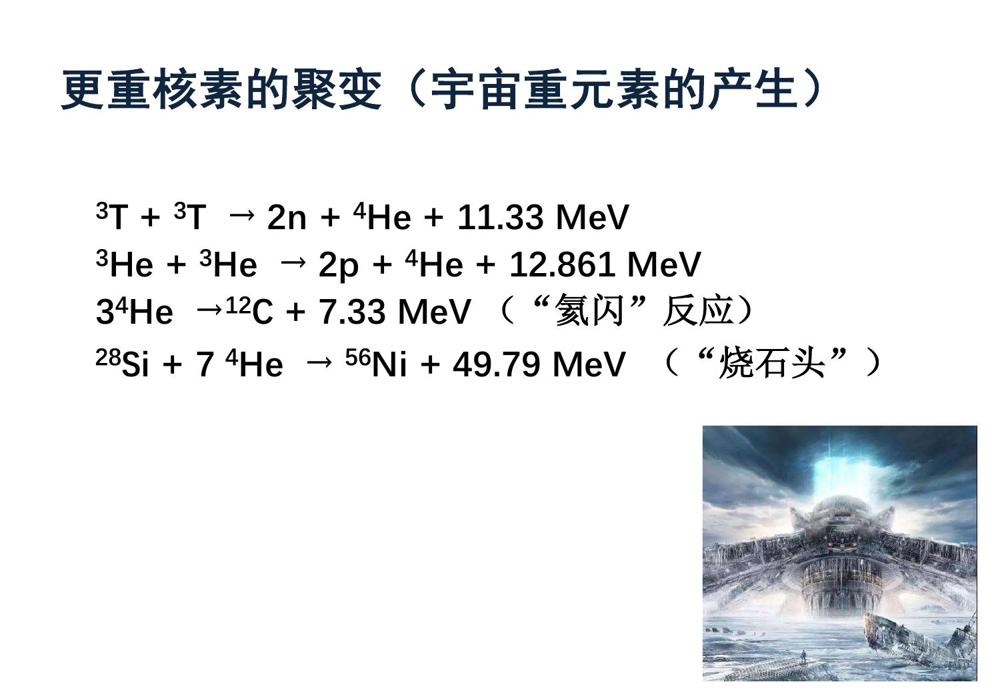
PDF 第 13 页聚变反应还有很多。课堂以T–T为例，讲了一段有关早期研究认识和于敏计算工作的历史故事，强调不能因为加入更多T就想当然认为反应性一定超过D–T。氚的获得本身很困难，所以对反应截面的认识会影响路线判断。
随后讲到三个α生成碳的过程，以及硅继续与α反应的恒星核合成，联系到《流浪地球》中“烧石头”的联想。石头中的硅并不是简单让两块石头碰一下，而是讨论核反应层面的能量变化。课件中的硅与多个α到镍的式子，是这种核合成的总过程示意。
T11 · 课堂互动：核素越重是否越困难
时间：25:15–27:54。课件PDF：14页。讲义N05
展开对应课件页
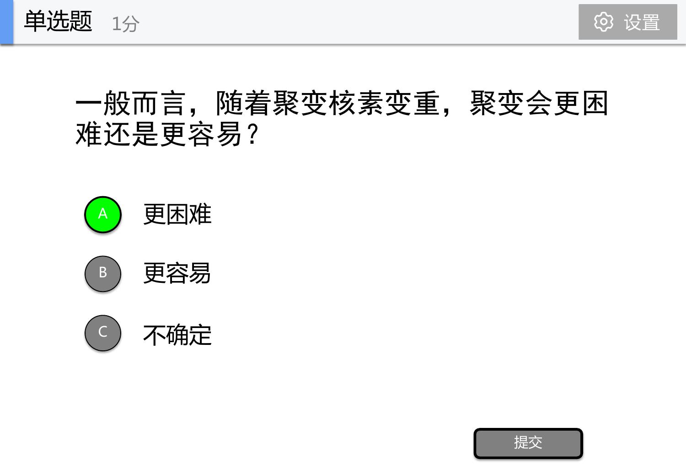
PDF 第 14 页这时有课堂互动与设备操作。教师随后说明：课堂做题主要看参与，不必过分担心答对率，目的是让大家思考、避免只是被动听课。
题目问一般而言，随聚变核素变重，聚变更困难还是更容易。课堂选择“更困难”。用比结合能曲线作直观比喻，往较平缓处走，能量增益不像前面那么明显；“烧石头”当然比D–T困难得多。但这里说的是一般趋势，曲线中有局部突出结构，不要把一般结论当成没有例外的严格定理。
目前有人选择D–T，也有人选择D–³He或氢硼。路线背后有不同投入与考虑，因此接下来需要建立评价标准。
T12 · 评价从反应式左右两边展开
时间：27:54–30:20。课件PDF：15,16页。讲义N06
展开对应课件页
PDF 第 15 页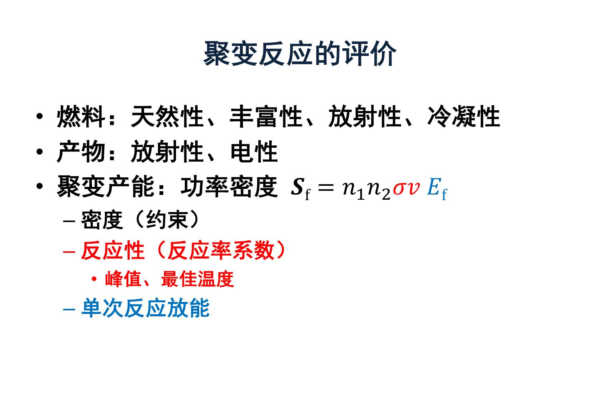
PDF 第 16 页聚变反应应该怎样评价？不用一开始就把问题想得很复杂。把反应式放在面前，左边是燃料，右边是产物与放出的能量，所以自然分成燃料、产物、聚变产能三个角度。这是一种从简单逻辑出发的思考方法。
燃料首先看天然有没有；如果没有，就要另行生产。再看丰富不丰富、取得容易不容易。像只有费尽千辛万苦才能拿到的“仙草”，即使有，也很难成为实际能源。还要看有无放射性，以及毒性或工艺上的处理问题。
产物不必再问天然存在多少，因为它是反应生产出来的；要看有没有放射性、需要怎样处理。即便产物有经济价值，也要评价整体是否划算，不能只看到“能生成贵重东西”。
T13 · 中子取能与反应性评价
时间：30:20–32:14。课件PDF：16页。讲义N06
展开对应课件页
PDF 第 16 页产物里有没有中子特别重要。中子不带电，不能像带电粒子那样直接用电磁场处理；常见取能方式是让它碰撞、慢化，把能量转成热，再通过热交换和热循环利用。带电产物则可能直接转换成电。
再看聚变功率密度，它是两种密度、反应率系数以及单次反应放能的乘积。密度与后面的约束问题有关；反应率系数反映反应性，有两个要看：峰值能有多高，达到较高反应性时需要多高温度。如果必须到极高温度才得到很大系数，付出的代价就可能很大。因此峰值和条件要一起看。
单次放能比较直接。评价原则本身不难，稍微容易混淆的还是截面，所以再回到截面图像。
T14 · 硬球、隧穿、共振与高能尾部
时间：32:14–35:31。课件PDF：17页。讲义N07
展开对应课件页
PDF 第 17 页若把两个核看成硬球，用两半径之和作为半径画一个圆，面积就是几何碰撞截面。核尺度下大致是0.1 barn量级；barn是10⁻²⁸ m²。
真实截面加入量子效应后，不像一个简单阶梯。低能端是隧穿：按经典图像本来过不了势垒，却仍有一定概率反应；能量越低，截面通常下降得很厉害。中间可能出现核能级共振，使截面比硬球估计更高，共振强弱不同，峰也不同。
高能端还有衰减尾部。课堂用速度很快时相互作用时间缩短作直观解释。截面可以用含有指数因子与天体物理因子的公式描述，详细讨论见教材和课件所提参考资料，这里不展开所有核物理细节。
T15 · 主要反应截面的三类数量级
时间：35:31–38:35。课件PDF：18页。讲义N08
展开对应课件页
PDF 第 18 页把主要反应画在一起，可以分组记忆。D–T截面最大，峰值对应能量也较低，大约在64 keV质心动能处达到5 b。
D–D两个支路、T–T大约在0.1 b量级，峰值对应能量更高，约千keV。D–³He与p–¹¹B大约在1 b量级，对应几百keV。大致分成这三类，比孤立背数字容易。
和p–p弱反应相比，这些截面已经大很多；但相对于热中子与铀-235的约600 b，又并不大。即便D–T也低很多。因此地球上的候选聚变反应，仍不是容易发生到可以忽略其概率的过程。
T16 · 查表先看质心系还是静靶系
时间：38:35–39:40。课件PDF：18页。讲义N08
展开对应课件页
PDF 第 18 页这里用的是质心系动能。早期核实验常常是让一个靶静止，用较轻的入射粒子打它，例如α粒子打金箔；实验数据就可能以入射粒子的实验室系能量为横轴。
质心系则要从总动能里减掉整体质心运动的动能。这是不同坐标系下的描述，数据可以换算，但不能把横坐标直接认作同一个量。教材介绍了两者关系，大家要自己看；今天作业可能涉及查表，尤其要注意这一点。
T17 · 反应率要对相对速度分布积分
时间：39:40–41:00。课件PDF：19页。讲义N09
展开对应课件页
PDF 第 19 页截面很重要，但功率密度实际涉及σv，不能只看σ。真实热核燃料中的速度不是单一数值，等离子体有温度，就有速度分布，因此需要对分布做平均。
把两种粒子的分布函数相乘，乘以它们相对速度对应的截面及相对速度，再对两种速度积分，最后得到n₁n₂〈σv〉。数学过程在教材里写得很细，课堂逐步推会占时间，要求大家自行阅读。
T18 · 高能尾部的作用及选做3.5
时间：41:00–43:37。课件PDF：19,20页。讲义N10
展开对应课件页
PDF 第 19 页PDF 第 20 页D–T截面峰值在64 keV，对应很高的能量尺度；课程后面讨论的典型工作温度则在一两亿度量级，不是一定让整个分布都达到截面峰值。温度分布中，大部分粒子在较低能区，少量高能粒子更接近较大截面的能区。
最终反应贡献来自截面与分布权重的乘积再积分，所以高能成分对反应有更大贡献。选做题3.5会计算和比较不同分布，运算稍烦，大家自行掌握。
对比截面与反应率系数曲线，可以看到峰的位置改变，低温一侧的反应率系数曲线有较可观的贡献。这是有利的，因为提供更高温度意味着更多投入。常用反应的截面、反应率系数数据及拟合公式在讲义和附表中有介绍。
T19 · 核极化、核散射与强场研究
时间：43:37–46:39。课件PDF：21页。讲义N11
展开对应课件页
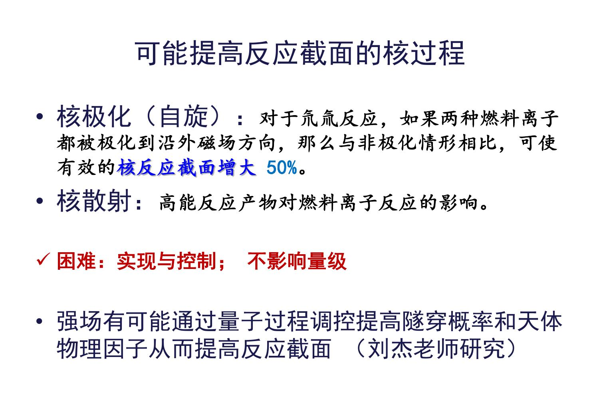
PDF 第 21 页有没有可能提高反应截面？这就是核物理可以做的工作。以D–T为例，如果两种燃料离子都极化到沿外磁场方向，和非极化情形相比，有效反应截面可以增大50%。
但是怎样实现和控制很困难。课堂用低温下较容易控制精细状态作比喻，而最终聚变燃料要在高温、高密环境中工作，怎样保持所需状态是问题。核散射、高能产物对燃料的影响也可研究；还提到刘杰老师关于强场通过量子过程影响隧穿和天体物理因子的理论研究。
如果这些能实现，当然有价值，也可能影响以后精细工程计算。但目前本课程很多估计仍在数量级层面，例如增加50%不会把基本数量级颠倒，所以不改变后面讨论的基本出发点。核物理给出截面数据，是所有这些估计的基础；若截面发生重大变化，评价也应跟着改变。
T20 · 理想燃料的要求与取舍
时间：46:39–48:46。课件PDF：22页。讲义N06
展开对应课件页
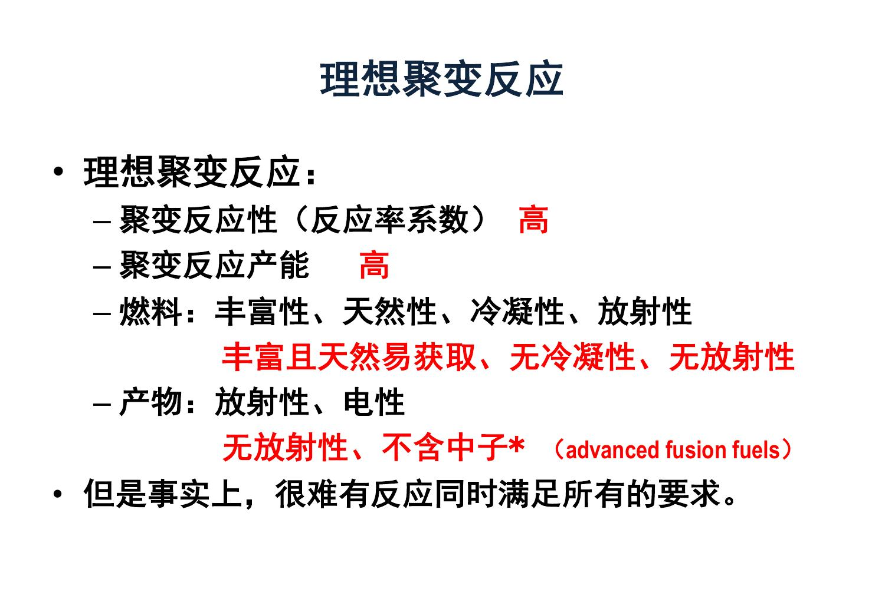
PDF 第 22 页再把理想聚变反应的要求列一遍。从产能角度，希望反应率系数足够高，同时达到足够高反应性所需的温度尽量低；单次放能当然越高越好。
从燃料看，希望天然丰富、容易取得、没有放射性；从产物看，希望没有放射性，而且全是带电粒子，不含中子。这就是最理想的组合。
但实际没有一种反应完全满足所有要求，所以必须取舍，看重哪一项，就要接受另外一些代价。下面讨论最可能采用的反应，分别看它们的优势和劣势。先看D–T，这是本讲比较中反应性最高的一种。
T21 · D–T的优势与氚需求
时间：48:46–51:30。课件PDF：23,24页。讲义N12
展开对应课件页
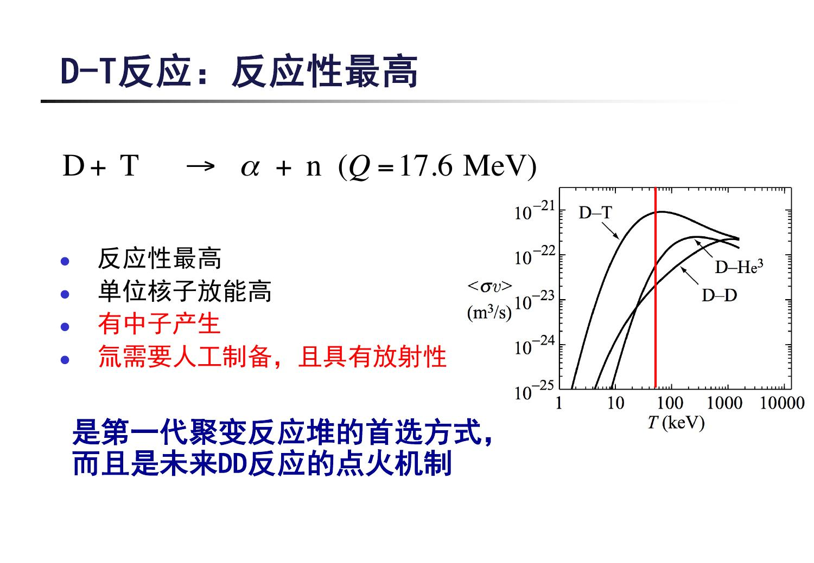
PDF 第 23 页PDF 第 24 页D–T反应性领先，单位核子放能也高：5个核子释放17.6 MeV，每核子超过3 MeV。相对于这里举的裂变平均每核子不到1 MeV，聚变在单位核子放能方面很突出。
它的劣势也很直接：产物有中子，常规能量利用仍要通过热；另一个是氚。氚具有放射性，半衰期约12.3年，每年少约5%，放12年左右还剩一半，并不是全部消失。
如果建D–T聚变堆，耗氚量会很大。课件举1 GW装置每年约50 kg，燃料系统会进入公斤级循环处理，远超课堂所对比的小量实验使用情形。制备可以借助中子和靶反应、反应堆辐照或加速器，但大规模供给是重要问题。
T22 · 外购氚的局限与自持生产
时间：51:30–53:09。课件PDF：24页。讲义N12
展开对应课件页
PDF 第 24 页课堂给出的氚产量是每年公斤量级，价格举每公斤数千万到上亿美元。教师强调：这种价格只能作为一个量级印象，不代表真能按这个价格买到，实际取决于产多少、要多少和供应条件。
还举国外购买和重水堆产氚的情形，说明外购不能作为未来大规模反应堆的当然前提。既然D–T本身产生中子，就应该利用自己的中子生产下一轮需要的氚，而不是一直依靠别人的中子源供氚。因此未来燃料循环要争取自给自足。
T23 · 锂增殖氚与资源联系
时间：53:09–54:43。课件PDF：24页。讲义N12
展开对应课件页
PDF 第 24 页产氚的两个主要反应是快中子与锂-7，以及热中子与锂-6。前者吸热，后者放热。课程关注锂-6作为重要增殖材料，也就涉及同位素资源和处理要求。
锂还与电池和储能相关，手机、电动汽车及部分可再生能源储能方案都会用到锂。因此当说聚变燃料来自水时，D–T路线还要考虑锂，不是只凭水就完成整个燃料循环。课堂用“水与石头”以及“水与手机电池”的说法帮助记忆资源联系。
T24 · 17.6 MeV怎样分给α与中子
时间：54:43–55:22。课件PDF：25页。讲义N13
展开对应课件页
PDF 第 25 页D–T生成一个α和一个中子，总放能17.6 MeV。中子携带14.1 MeV，这是D–T中子的典型能量；不同聚变反应的中子能量不同，D–D就不是这个值。
α携带3.5 MeV，这部分后面非常重要，因为α能用来加热并维持燃料的反应。能量分配由动量和能量守恒得到，是可以自己推出的简单关系。
T25 · 氚的放射性与物质形态
时间：55:22–57:38。课件PDF：26页。讲义N14
展开对应课件页
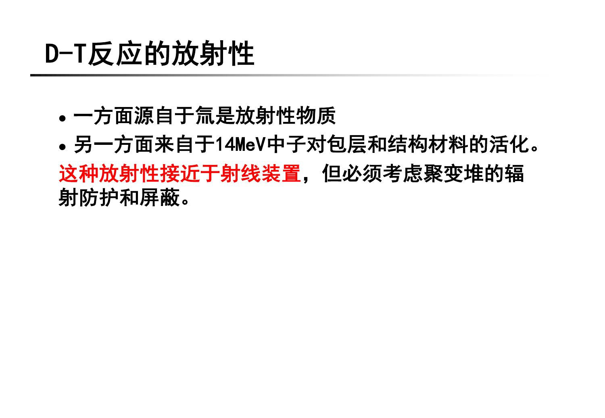
PDF 第 26 页课堂把D–T系统的放射性分成两个来源。首先是燃料氚的放射性。教师试图区分穿透很弱的辐射和核素进入体内的问题，并以氢被氚替代的水分子、氚衰变为³He等例子说明核素与物质形态的变化。
这一段还讨论了含氚水和氚的管理。有关体内影响，应结合活度、化学形态和剂量理解，详见讲义第14节。
T26 · 中子活化与停机后的材料
时间：57:38–59:45。课件PDF：26页。讲义N14
展开对应课件页
PDF 第 26 页另一来源是14 MeV中子。它会打到包层和结构材料。材料核素吸收中子或发生核反应后，有的产物仍稳定，有的会成为放射性核素，这就是需要处理的活化问题。
课堂把它与其他射线装置、中子源的材料活化作比较，强调既要处理已被活化的材料，也必须考虑辐射防护和屏蔽。停掉聚变源后不再继续产生相同的主反应中子，但已经活化的材料仍是后续处理对象。
T27 · D–D的燃料优势及产物代价
时间：59:45–01:02:03。课件PDF：27,28,29页。讲义N15
展开对应课件页
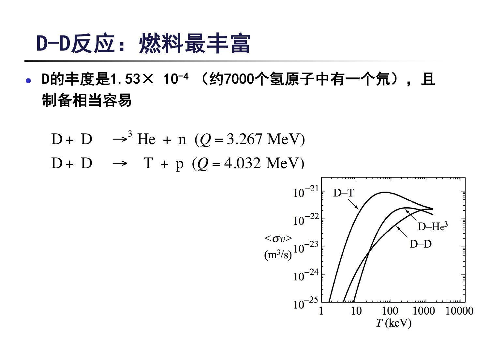
PDF 第 27 页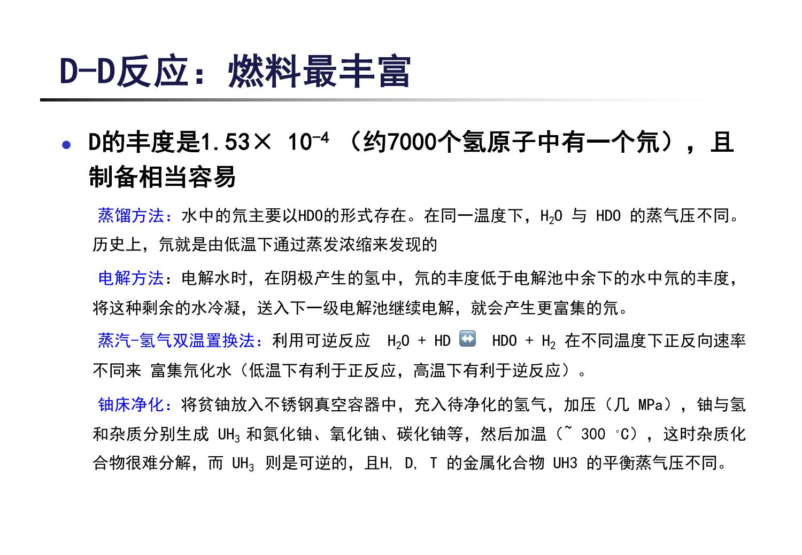
PDF 第 28 页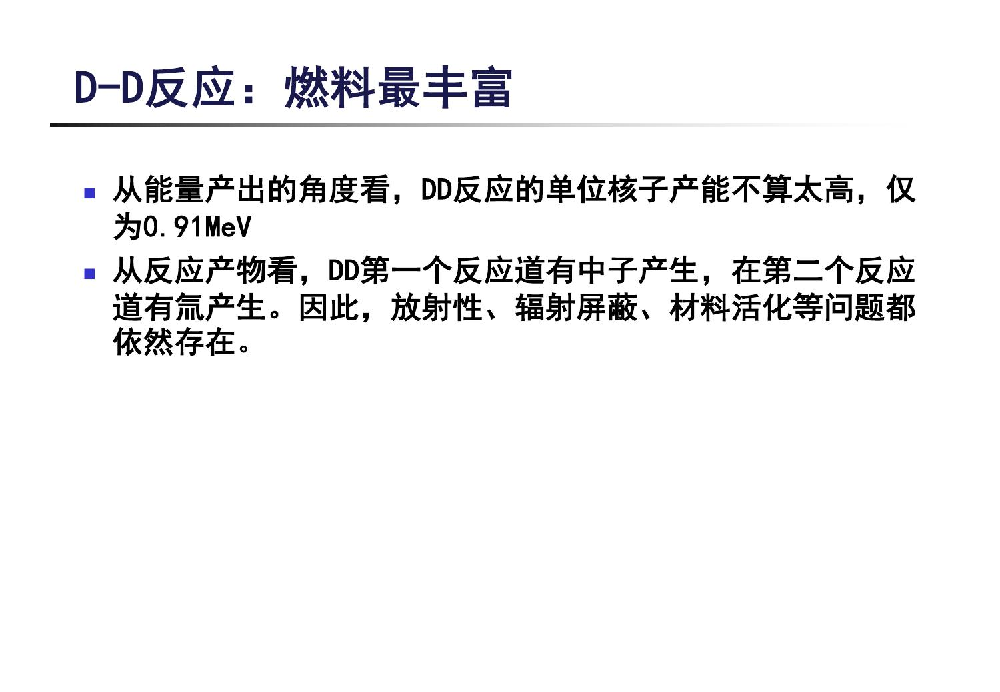
PDF 第 29 页D–D的优点非常清楚：氘天然存在而且丰富，地球上水很多，氢中总有一定比例的氘，制备也相对容易。课堂不展开具体制备方法，重点是认识原料丰富这一优势。
但其他方面不能因此忽略。D–D单次放能不算很高；两个主要通道中，一个产中子，另一个产氚。原料本身没有放射性，反应后却引入放射性中间产物和中子，仍需要考虑屏蔽、取能和材料活化。
说聚变具有非常长远的燃料资源，主要是指向D–D的氘资源潜力。它并不是没有价值，而是反应条件困难。那么能不能改进？注意D–D产物中有T和³He，分别还可以与D继续反应。
T28 · 半催化与完全催化D–D
时间：01:02:03–01:03:36。课件PDF：30,31页。讲义N16
展开对应课件页
PDF 第 30 页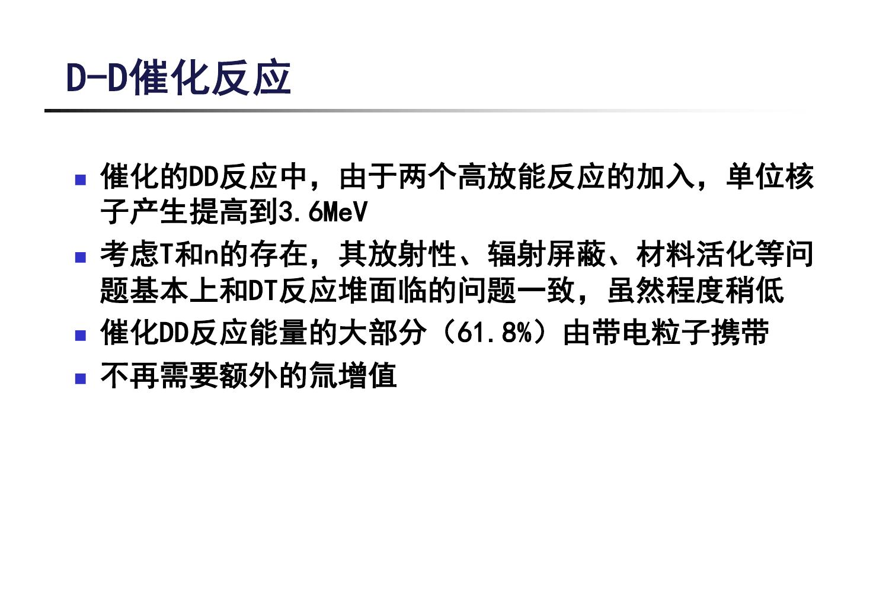
PDF 第 31 页D–D生成T，就可以发生D–T；生成³He，就可以发生D–³He。这些后续反应的反应性和放能值得利用，而不是只让D–D停在最初两个通道。
只加入D–T后续反应，叫半催化；把D–³He也加进来，就是完全催化D–D。合起来，12个核子释放约43 MeV，平均每核子放能提高。
课堂说氚一产生就继续烧掉，是描述理想的自产自耗循环，不是说氚从未产生。组合反应仍有中子，仍需考虑活化。带电产物的总携能比例提高到约61.8%，这给能量利用方式更多选择。
T29 · 带电份额与直接转换的思想实验
时间：01:03:36–01:06:25。课件PDF：31页。讲义N16
展开对应课件页
PDF 第 31 页假如带电粒子能量的转换效率能达到80%，大约60%的能量乘80%，就能得到约48%的总能量转换。这是课堂用来比较能量取出方式的思想实验。中子仍占三成多，但不一定非要把它全部当作主要发电热源，也可考虑中子的其他用途。
相比主要依靠中子慢化再通过蒸汽热循环的方案，带电份额增加带来不同选择。催化D–D提高了单位核子放能，也有望减少对外部持续补氚的依赖。
不过反应里仍有T和中子，辐射屏蔽、材料活化仍要考虑。这里不是说所有工程成本都已经算清，而是说明组合反应的资源和能量结构更有吸引力。
T30 · D–T作为未来反应的引火机制
时间：01:06:25–01:07:44。课件PDF：30,31页。讲义N16
展开对应课件页
PDF 第 30 页PDF 第 31 页可以设想先做D–T，把产生的能量继续用来加热，逐步达到D–D、D–³He所需的更高温度条件。课堂称它为“点火机”，用点煤作比喻：火柴不容易直接把煤点着，可以先点报纸、软柴等引火物，再让煤达到能燃烧的温度。
于是D–T可以是第一步，再考虑不断补D而不持续外加T的催化循环。有人质疑“取之不尽的聚变燃料其实说的是更难实现的D–D”，课堂回应是可以分阶段看待，不必假定第一代就实现最终燃料循环。
T31 · D–³He的吸引力与伴生反应
时间：01:07:44–01:10:41。课件PDF：32页。讲义N17
展开对应课件页
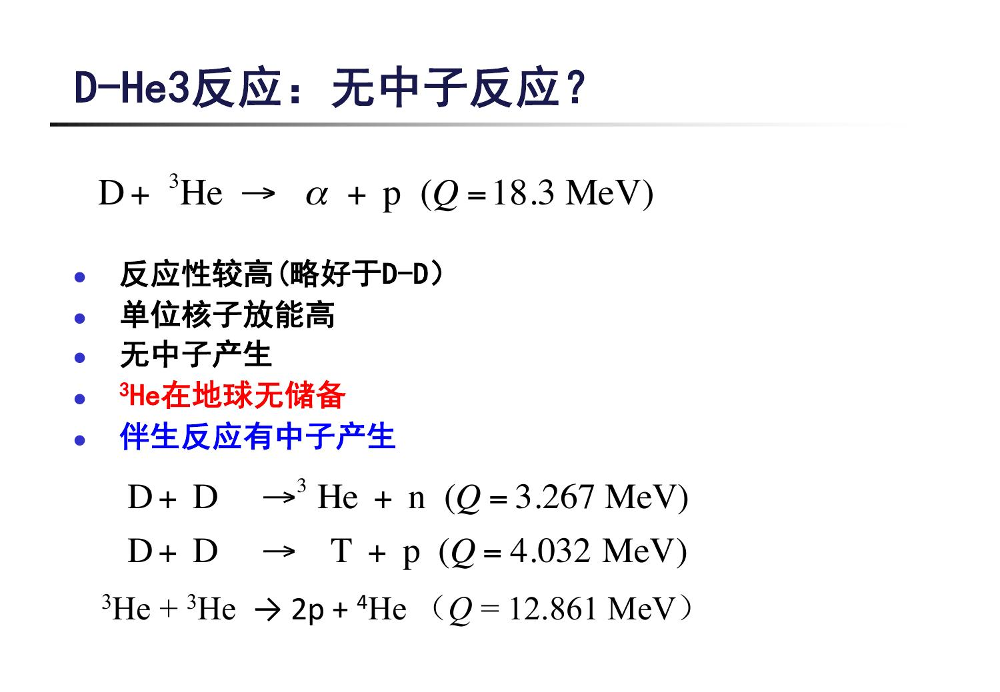
PDF 第 32 页D–³He反应性介于本讲所比较的D–T与D–D之间，主反应放能18.3 MeV，比D–T的17.6 MeV还稍高。产物是α和质子，没有主反应中子，所以可以设想不经蒸汽热循环而直接利用带电粒子能量，例如课堂提到的磁流体或其他直接转换思路。
但课件标题“无中子反应”后面打了问号。为什么？因为不是拿一个D只与一个³He碰，而是一群D与一群³He混在一起。D–³He发生时，D–D也会发生，产生中子和T，因此整个体系不是纯粹没有中子。
T32 · 通过配比降低中子份额的代价
时间：01:10:41–01:12:55。课件PDF：32页。讲义N17
展开对应课件页
PDF 第 32 页怎样让伴生中子更少？可以提高³He比例，降低D比例，抑制D–D相对于主反应的发生。这样要付出反应产能方面的代价，再用较低中子份额换取屏蔽等方面的便利。
工程问题往往就是权衡和交换；科学上首先要认清，D–³He不是凭主反应式就能证明整个装置无中子。它还有一个核心问题：³He供给很少。课堂主要讲通过T衰变得到³He，因此生产过程可能仍绕不开T；只是堆内使用³He时，可以减少直接处理T燃料的一些麻烦。
T33 · 月球资源与太空建堆的课堂畅想
时间：01:12:55–01:13:39。课件PDF：33页。讲义N17
展开对应课件页
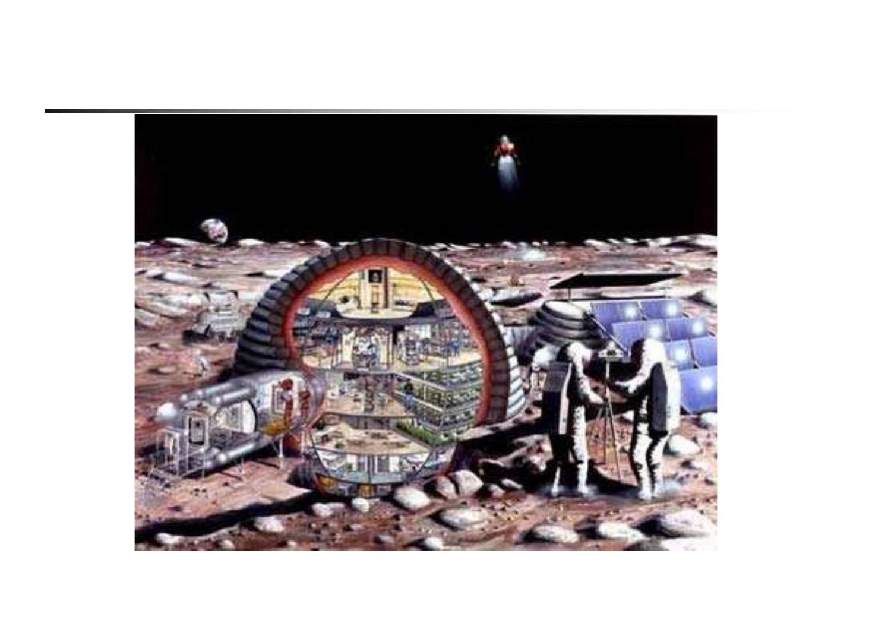
PDF 第 33 页课堂接着讨论月球³He资源：有这种资源线索，还要弄清含量、富集位置和是否值得开采，不能只知道“月球有”就跳到能源可用。取得后怎样运回、运输经济性如何，也都是问题。
还畅想在太空建设装置，利用远离太阳的冷环境、当地资源等条件，并提到超导制冷和能量利用。这里属于课堂发散讨论，并没有给出可行性论证。
T34 · 质子反应与氢硼的天然燃料优势
时间：01:13:39–01:16:02。课件PDF：34,35页。讲义N18
展开对应课件页
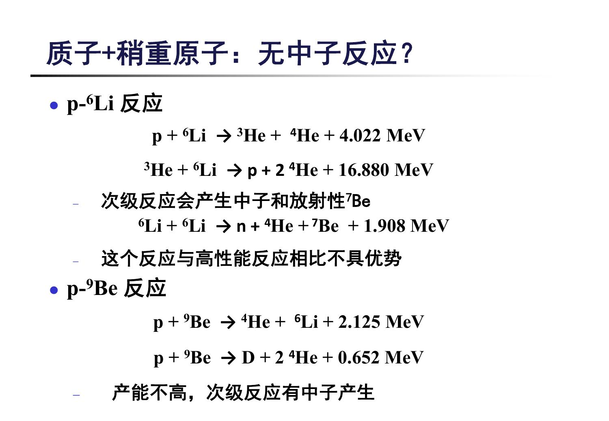
PDF 第 34 页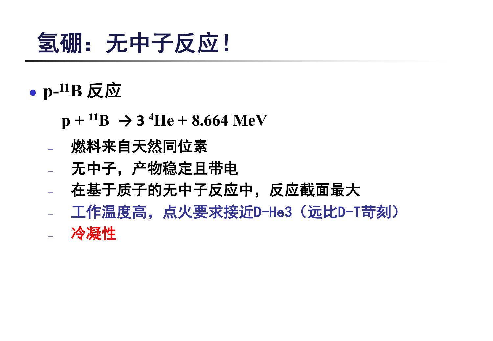
PDF 第 35 页再看质子参与的反应。质子与锂、铍的主反应虽然不直接产中子，但次级反应又会带来中子，而且放能不高，课堂认为与更有希望的高性能反应相比优势有限。
更有影响的是氢硼：一个质子加硼-11，生成三个α，放能8.664 MeV。燃料来自天然同位素，主反应产物稳定且带电。若细究次级反应仍可能有中子，但材料中认为相比主反应很弱，因此可以把低中子作为它的重要特点。
在这里列的基于质子的候选中，它的反应截面较大，因而成为有特点的研究路线。
T35 · 公司举例、冷凝与高温代价
时间：01:16:02–01:17:49。课件PDF：35页。讲义N18
展开对应课件页
PDF 第 35 页课堂举Tri Alpha和国内新奥作为氢硼路线的例子，并解释名字中的“三个α”来自反应产物。要注意，恒星里的三α过程通常指三个α合成碳，与这里“产物是三个α”不是同一个反应。
氢硼的劣势也明显。硼可能在相关管道或系统中冷凝，这是工艺问题，本课不细讲。更重要的是温度要求高，远比D–T苛刻。即使反应率系数的峰值不算特别小，如果要加热到更高温度，付出的能量就更多，不能只比峰高。
T36 · 点火与辐射损失的预告
时间：01:17:49–01:20:08。课件PDF：35,36页。讲义N18
展开对应课件页
PDF 第 35 页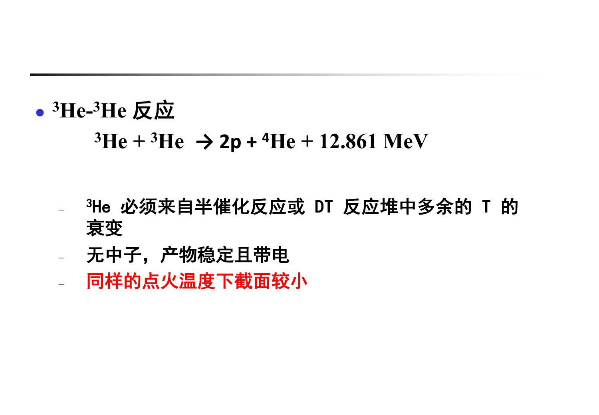
PDF 第 36 页温度越高，意味着需要投入更多能量，还意味着辐射损失可能更大。课堂预告后面要讲点火条件：在电子、离子同温的条件下，D–³He可以有点火条件，而氢硼可能受辐射损失限制。
因此氢硼很值得研究，但工作温度和能量控制要求苛刻。某些公司看重避开D–T的T供应和强中子工程问题，是选择研究路线的动机之一；不是因为这些问题少，就证明反应本身容易。
³He–³He等其他反应也列在课件中，课堂没有深入讨论。主要应记住D–T、D–D两支路、D–³He、氢硼，以及两个锂增殖氚反应。
T37 · 把候选反应放进同一张比较表
时间：01:20:08–01:23:09。课件PDF：36,37,38,39页。讲义N19
展开对应课件页
PDF 第 36 页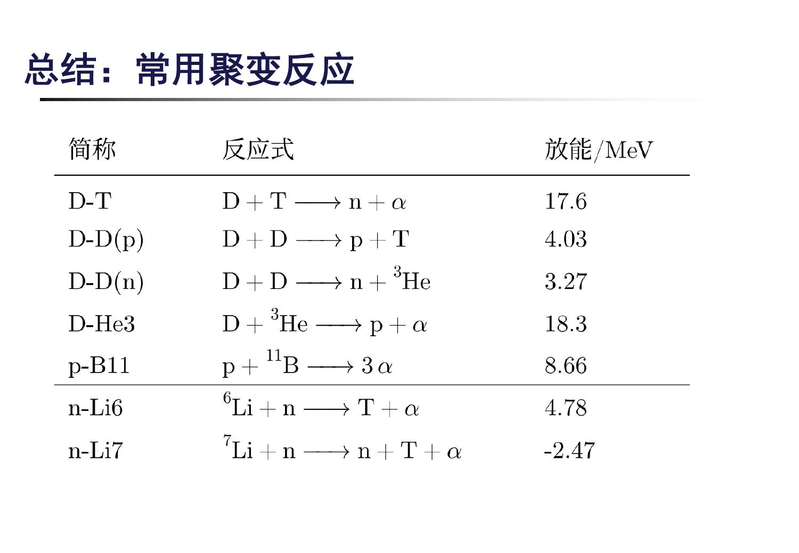
PDF 第 37 页PDF 第 38 页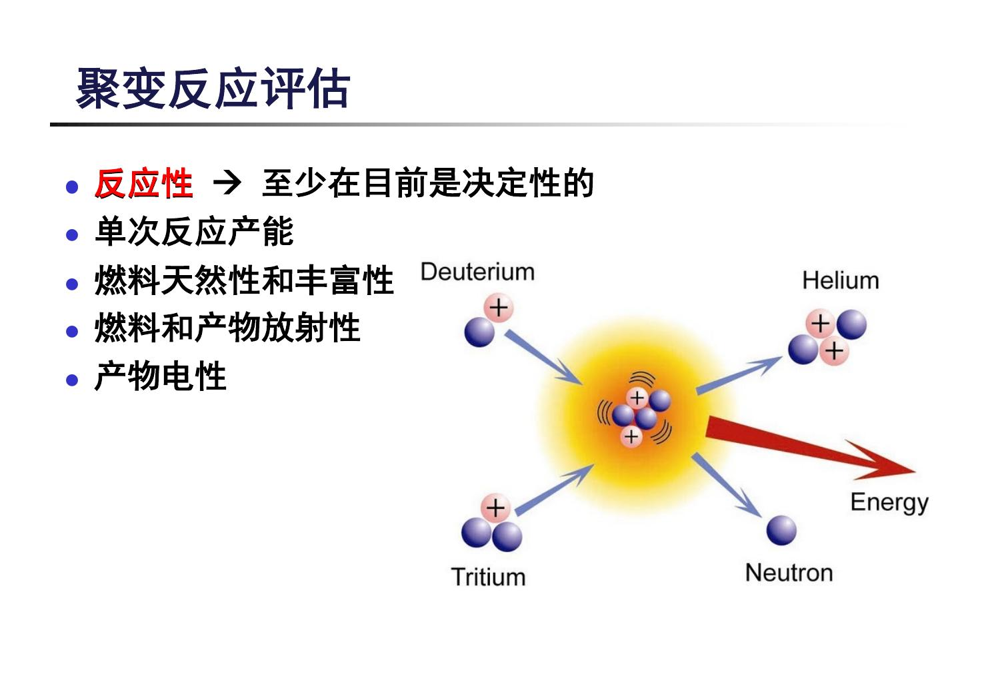
PDF 第 39 页把主要反应放在一起看，没有一种能把高反应性、高放能、燃料容易取得、低放射性和直接转换全部占满。D–T突出反应性与能量产生；D–D突出燃料丰富，若加上催化后续反应，则放能和取能结构都改善，但要求仍高，仍有放射性问题。
D–³He单次放能高，中子相对较少、直接转换有吸引力，但燃料与反应性条件仍是困难。氢硼燃料容易取得、主产物低放射性且带电，却面对高温和较差的低温反应性。
所以要取舍。课件中一处写“产物电性”，另一处写“直接转换”，是在从物理性质走向应用结果。不能只拿一个指标宣布全面胜出。
T38 · 为什么优先选D–T
时间：01:23:09–01:25:07。课件PDF：39,40页。讲义N19
展开对应课件页
PDF 第 39 页PDF 第 40 页目前课程讨论的主流选择是D–T，并不是不知道它有T和中子的麻烦，而是把反应性看成这个阶段决定性的因素。
课堂用“先要有饭吃，再讨论吃什么菜”作比喻：先争取在人类可控制的条件下得到可利用的聚变能量输出，再谈怎样让取能效率更高、环境影响更小。只看前面的截面，可能觉得5 b与1 b也没差多少，但还没有真正考虑聚变实现的困难。
接着要把散射等过程放进来。与中子触发裂变不同，两个带电核需要靠得足够近，必须付出能量；即使提供了能量，也未必能按想要的方式发生聚变。
T39 · 束靶例子：散射竞争压低有效产出
时间：01:25:07–01:27:08。课件PDF：40页。讲义N19
展开对应课件页
PDF 第 40 页两带电粒子相遇时，散射会大量发生，而且比聚变常见。课件以20 keV的D束打T靶为例，文字给出约10⁶–10⁷个粒子被散射才对应一次聚变，说明不能只用一个粒子的20 keV投入和一次反应17.6 MeV产出比较。
如果要为大量没有聚变的粒子也付出加速能量，收支就完全不同。提供足以接近两核的能量还不够，竞争过程和损失必须一起算。
T40 · 复习散射与轫致辐射，进入能量平衡
时间：01:27:08–01:29:53。课件PDF：41,42,43页。讲义N19 · 讲义N20
展开对应课件页
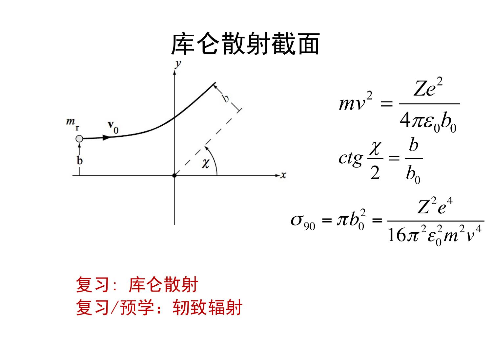
PDF 第 41 页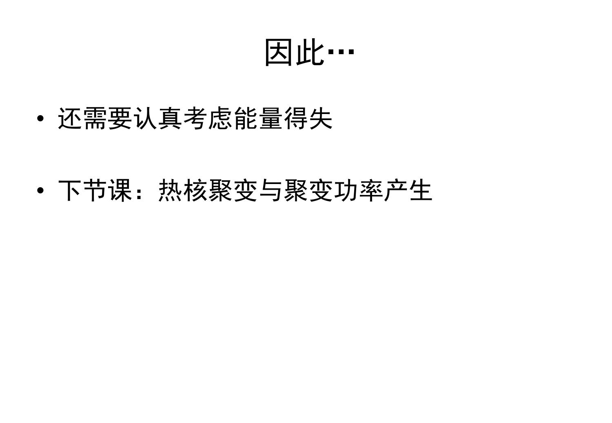
PDF 第 42 页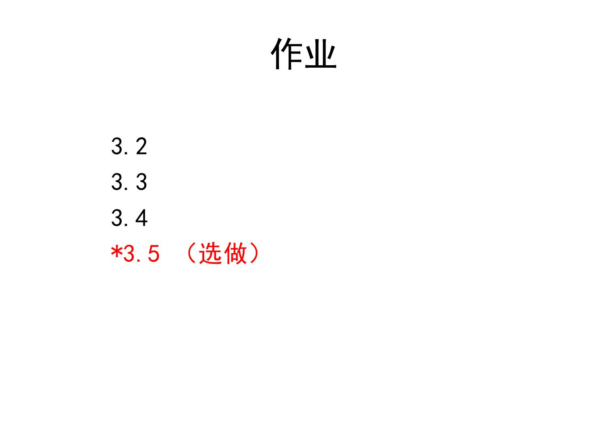
PDF 第 43 页库仑散射可以从能量守恒、角动量守恒出发，得到90°散射对应的碰撞参数和截面，大家要复习这个经典问题。
还有辐射损失没有考虑。在库仑相互作用中，带电粒子经历加速或减速，会产生辐射；课件要求复习或预学轫致辐射。电动力学学过的同学可以再看公式，本课先认识它是一种能量损失过程，不要求当场展开全部细节。
只有认真考虑能量得到和能量损失，才能知道怎样实现聚变能源。困难考虑进去以后，优先选择反应性最高的路线就更容易理解。其他路线可能是在回避T和中子工程问题的同时，承担另一组研发风险。
这节到这里，下节讨论热核聚变与聚变功率产生。课件末页列作业3.2、3.3、3.4及选做3.5。
L02 来源、对齐与订正
整理日期：2026-09-22。课堂日期来自转写头部2026-09-21 08:00；未独立验证墙钟。讲次由课件“第二讲”与既有Course_Index确定。
来源与实际处理
| 来源 |
文件与指纹 |
实际处理 |
| S1 |
7687771663933869031_record_audio.m4a；80429362 bytes；SHA256 1f3e1723e7db7ef58f872ee13025eb50339d7bea02255c169db6ed5b7a95e0a9 |
读取MP4 mvhd时长5393.34秒；未解码核听、未再次ASR；归档与Downloads副本指纹一致 |
| S2 |
聚变反应相关知识讲解.txt；70666 bytes；SHA256 5424b03fe0f9a84cc996bf90e472bce96d754c1bc96a5d37a256811d772e3d01 |
全文读取；91个原时间锚点归入40个稳定片段；末时间戳01:28:09为段起点；归档与Downloads副本指纹一致 |
| S3 |
聚变能源概论2026L2.pdf；2960700 bytes；SHA256 cbe452d2084c1d19a2f377265a1d60fdda586350f82c18a37cda3ba81b64e570 |
43页文本提取；43页渲染；全部页缩略图目视检查，关键公式和表格回原尺寸核验；归档与Downloads副本指纹一致 |
| G1 |
已归档教材拍摄PDF；SHA256 ebcbe8a9859b23ca0f2b6d58a955dfb7df8bb55cd2a3e62279e6ab561b17add6 |
本次复用并查看PDF19–33，即印刷15–29；非全文OCR；封面/版权页仍缺，版次印次未核 |
| E1 |
NRC氚与辐射防护说明 |
2026-09-22读取官方页面；仅用于氚内照射边界的编者核验，不是授课材料；未复制网页资产 |
新原件原样保留；课堂文件中的课程要求作为课程内容记录，不视为执行其他任务的指令。未提供板书、独立参考资料“fusion reaction”、教材附录A或第4章正文。教材作者出版社年份来自课程书目，不等于实物版权页核验。
课堂范围与删减边界
转写覆盖p.4–42的主要教学主线。p.1、3是封面/讲题，p.2是课程信息；不凭文件存在推断本次逐项复述。p.28制备方法课堂明说略过，放在讲义并标课件补充；p.33为月球畅想图；p.36略提；p.43作业由课件确认，转写明确说到3.5选做。所有页均在下表有落点。
只合并重复、停顿、口头赘词；25:15–26:04零碎操作短语保留其发生位置，不猜补内容。历史轶事、公司路线和太空畅想保留为课堂例子而非独立事实核实。55:22后涉及氚安全的原稿不确定表述，以短引文和编者核验保留冲突，避免润色成错误安全结论。没有新增学习日志或判断用户掌握情况。
全文转写覆盖表
以下起止时间用于阅读与定位；末段以容器实测结束补齐，不代表精确逐句音频对齐。表中原稿锚点范围含边界内全部原段；行号按未改动UTF-8文本从1计数。人工表与机器JSON由同一组40段数据生成。
| 段 |
原转写锚点范围（行） |
时间区间 |
课件PDF |
讲义 |
| T01 回顾：太阳给我们的启示 |
00:00–00:44（L7–L10） |
00:00–01:24 |
4 |
N01 |
| T02 反应截面与单粒子碰撞频率 |
01:24–02:47（L13–L19） |
01:24–03:17 |
5 |
N02 |
| T03 反应率、功率密度与反应率系数 |
03:17–05:19（L22–L31） |
03:17–06:07 |
5 |
N02 |
| T04 太阳p–p反应的数量级与学习要求 |
06:07–07:53（L34–L37） |
06:07–08:54 |
6 |
N03 |
| T05 弱相互作用为什么不适合作为地面主反应 |
08:54–09:30（L40–L43） |
08:54–10:49 |
6,7 |
N01 |
| T06 从中子出发：裂变的两个优势 |
10:49–13:38（L46–L58） |
10:49–15:40 |
8 |
N04 |
| T07 轻核与中子的两种假设性反应 |
15:40–16:34（L61–L64） |
15:40–18:23 |
9 |
N04 |
| T08 不能做主反应，不等于系统中没有用 |
18:23–19:07（L67–L70） |
18:23–19:52 |
9,10 |
N04 |
| T09 从质子、氘出发筛选反应 |
19:52–21:53（L73–L79） |
19:52–22:40 |
10,11,12 |
N05 |
| T10 其他反应与恒星、影视联想 |
22:40–23:51（L82–L85） |
22:40–25:15 |
13 |
N05 |
| T11 课堂互动：核素越重是否越困难 |
25:15–27:09（L88–L100） |
25:15–27:54 |
14 |
N05 |
| T12 评价从反应式左右两边展开 |
27:54–28:48（L103–L106） |
27:54–30:20 |
15,16 |
N06 |
| T13 中子取能与反应性评价 |
30:20–31:34（L109–L115） |
30:20–32:14 |
16 |
N06 |
| T14 硬球、隧穿、共振与高能尾部 |
32:14–34:54（L118–L124） |
32:14–35:31 |
17 |
N07 |
| T15 主要反应截面的三类数量级 |
35:31–37:27（L127–L133） |
35:31–38:35 |
18 |
N08 |
| T16 查表先看质心系还是静靶系 |
38:35–39:15（L136–L139） |
38:35–39:40 |
18 |
N08 |
| T17 反应率要对相对速度分布积分 |
39:40–40:25（L142–L145） |
39:40–41:00 |
19 |
N09 |
| T18 高能尾部的作用及选做3.5 |
41:00–42:09（L148–L154） |
41:00–43:37 |
19,20 |
N10 |
| T19 核极化、核散射与强场研究 |
43:37–45:39（L157–L166） |
43:37–46:39 |
21 |
N11 |
| T20 理想燃料的要求与取舍 |
46:39–47:22（L169–L172） |
46:39–48:46 |
22 |
N06 |
| T21 D–T的优势与氚需求 |
48:46–50:26（L175–L178） |
48:46–51:30 |
23,24 |
N12 |
| T22 外购氚的局限与自持生产 |
51:30–51:30（L181–L181） |
51:30–53:09 |
24 |
N12 |
| T23 锂增殖氚与资源联系 |
53:09–53:50（L184–L187） |
53:09–54:43 |
24 |
N12 |
| T24 17.6 MeV怎样分给α与中子 |
54:43–54:43（L190–L190） |
54:43–55:22 |
25 |
N13 |
| T25 氚的放射性：原稿疑点保留 |
55:22–56:31（L193–L196） |
55:22–57:38 |
26 |
N14 |
| T26 中子活化与停机后的材料 |
57:38–59:10（L199–L202） |
57:38–59:45 |
26 |
N14 |
| T27 D–D的燃料优势及产物代价 |
59:45–59:45（L205–L205） |
59:45–01:02:03 |
27,28,29 |
N15 |
| T28 半催化与完全催化D–D |
01:02:03–01:02:57（L208–L211） |
01:02:03–01:03:36 |
30,31 |
N16 |
| T29 带电份额与直接转换的思想实验 |
01:03:36–01:04:35（L214–L217） |
01:03:36–01:06:25 |
31 |
N16 |
| T30 D–T作为未来反应的引火机制 |
01:06:25–01:07:18（L220–L223） |
01:06:25–01:07:44 |
30,31 |
N16 |
| T31 D–³He的吸引力与伴生反应 |
01:07:44–01:09:52（L226–L232） |
01:07:44–01:10:41 |
32 |
N17 |
| T32 通过配比降低中子份额的代价 |
01:10:41–01:11:24（L235–L238） |
01:10:41–01:12:55 |
32 |
N17 |
| T33 月球资源与太空建堆的课堂畅想 |
01:12:55–01:12:55（L241–L241） |
01:12:55–01:13:39 |
33 |
N17 |
| T34 质子反应与氢硼的天然燃料优势 |
01:13:39–01:14:34（L244–L247） |
01:13:39–01:16:02 |
34,35 |
N18 |
| T35 公司举例、冷凝与高温代价 |
01:16:02–01:16:39（L250–L253） |
01:16:02–01:17:49 |
35 |
N18 |
| T36 点火与辐射损失的预告 |
01:17:49–01:19:10（L256–L259） |
01:17:49–01:20:08 |
35,36 |
N18 |
| T37 把候选反应放进同一张比较表 |
01:20:08–01:22:05（L262–L265） |
01:20:08–01:23:09 |
36,37,38,39 |
N19 |
| T38 为什么优先选D–T |
01:23:09–01:23:09（L268–L268） |
01:23:09–01:25:07 |
39,40 |
N19 |
| T39 束靶例子：散射竞争压低有效产出 |
01:25:07–01:25:07（L271–L271） |
01:25:07–01:27:08 |
40 |
N19 |
| T40 复习散射与轫致辐射，进入能量平衡 |
01:27:08–01:28:09（L274–L277） |
01:27:08–01:29:53 |
41,42,43 |
N19,N20 |
逐页课件落点
| PDF页 |
内容与状态 |
讲义 |
| p.1 |
课程封面；非知识页 |
N01 |
| p.2 |
教材/考核/联络信息；本次未逐项口述，不重抄个人联络方式 |
N20 |
| p.3 |
第二讲标题 |
N01 |
| p.4 |
上节回顾 |
N01 |
| p.5 |
四个物理量 |
N02 |
| p.6 |
太阳数值链 |
N03 |
| p.7 |
弱相互作用与候选路线 |
N01,N04 |
| p.8 |
裂变对比 |
N04 |
| p.9 |
假设性中子反应；简式边界 |
N04 |
| p.10 |
候选路线选择 |
N04,N05 |
| p.11 |
质子反应 |
N05 |
| p.12 |
氘反应 |
N05 |
| p.13 |
恒星反应举例；数值不作精算 |
N05 |
| p.14 |
课堂互动与参与要求 |
N05,N20 |
| p.15 |
评价三维度 |
N06 |
| p.16 |
功率密度与评价指标 |
N06 |
| p.17 |
截面模型和图 |
N07 |
| p.18 |
截面比较与数据冲突 |
N08 |
| p.19 |
速度平均/高能尾部/选做题 |
N09,N10 |
| p.20 |
两种曲线及单位 |
N10 |
| p.21 |
提高反应性研究方向 |
N11 |
| p.22 |
理想反应 |
N06 |
| p.23 |
D–T优势 |
N12 |
| p.24 |
氚与锂增殖 |
N12 |
| p.25 |
两体能量分配 |
N13 |
| p.26 |
放射性与活化 |
N14 |
| p.27 |
D–D燃料 |
N15 |
| p.28 |
制备原理：课堂略过，课件补充 |
N15 |
| p.29 |
D–D能量与放射性 |
N15 |
| p.30 |
催化链与引火设想 |
N16 |
| p.31 |
催化反应的工程权衡 |
N16 |
| p.32 |
D–³He与伴生反应 |
N17 |
| p.33 |
月球畅想图；非工程证据 |
N17 |
| p.34 |
p–Li/Be与次级反应 |
N18 |
| p.35 |
氢硼与条件 |
N18 |
| p.36 |
³He–³He：略提 |
N18 |
| p.37 |
反应总表 |
N05,N12,N19 |
| p.38 |
选择矩阵；非无条件评级 |
N19 |
| p.39 |
反应性优先 |
N19 |
| p.40 |
散射竞争；文字数量级待核 |
N19 |
| p.41 |
散射公式与轫致辐射；π因子订正 |
N19,N20 |
| p.42 |
能量收支与下讲预告 |
N19,N20 |
| p.43 |
作业题号；不冒充全部口述 |
N20 |
关键订正与待核听清单
术语级“刀/川/亥三/青铜/界面/盒子/种子”仅在明确上下文中分别整理为氘/氚/氦-3/氢硼/截面/核子/中子，不做全局替换；其他具体修改如下。音频核听状态全部为未核听。
| 定位 |
原稿/课件问题 |
本次处理与证据 |
| 06:07，T04 |
截面“10的-25”、系数和频率漏负号 |
采用课件p.6的10⁻⁵⁴、2×10⁻⁴⁹、6×10⁻¹⁸；反应率约10¹⁴与功率200复算相符 |
| 08:54，T04–05 |
核尺寸“10的-10” |
按课件p.6核尺度10⁻¹⁴–10⁻¹⁵ m；不声称恢复了录音原话 |
| 13:38，T06 |
中子“不偏转/不散射” |
只确定无库仑排斥；指出仍会有核散射和吸收 |
| p.8–9，T06–07 |
裂变式含后续β；n+D→³He+e⁻假设式省略过程 |
保留为来源简式，说明非唯一瞬发裂变通道，非直接强作用俘获通道；不无声改原件 |
| 16:34，T07 |
“ABS、加速器……” |
按语境写ADS并标疑似、待核听，不补具体工程方案 |
| 22:40–26:04，T10–11 |
历史轶事、红矮星/氦闪段严重识别错乱及操作短句 |
保留话题、参与要求和来源定位；不编造恒星演化过程、史料或设备对话 |
| 32:14–38:35，T14–15 |
“0.18、1亿、600万、千MeV” |
按课件p.17–18恢复barn、0.1 b/1 b/600 b及千keV数量级 |
| p.18 vs G1印刷20 |
p–¹¹B峰能550 vs 5500 keV |
并列冲突；G1印刷21正文又写数百keV；未声称有独立精确数据定案 |
| p.18 vs p.6 |
p–p旁“1000 K”与太阳1.4×10⁷ K混杂 |
不引用1000 K作为核验过的反应条件 |
| 39:40–43:37，T17–18 |
公式ASR混乱；峰值与温度混用 |
用p.19及G1式(3.7)–(3.19)解释；详细推导放Notes并标教材补充 |
| 48:46–50:26，T21 |
氚“12.3米”“12年没了” |
p.24为12.3年；原稿后文也更正为一半；50kg/y增加功率口径说明 |
| 55:22–57:38，T25 |
氚摄入“没事”、标准与短期衰减的绝对化表述 |
保留短引文疑点并以E1说明内照射边界；不把错误安全结论收入讲义 |
| 57:38–59:45，T26 |
活化材料均为十几年/几十年 |
不推广为所有材料定律；按课件p.26保留防护与屏蔽要求 |
| 59:45，T27 |
每1000个氢中一个氘 |
p.27–28及G1印刷25为1.53×10⁻⁴，约7000个一个 |
| 01:02:03–01:06:25，T28–29 |
催化D–D“氚根本不产生”；48%效率 |
明确T为中间产物；60%×80%=48%为取整思想实验；61.8%精算为49.44%，非净电效率 |
| 01:07:44，T31 |
13.8后改18.3；D–³He多次误为D–T |
按p.32确定18.3 MeV、D–³He；伴生反应保留 |
| 01:10:41，T32 |
“提高氚浓度” |
按p.32及G1印刷26改为³He；功率变化需写明固定总密度等条件 |
| 01:12:55，T33 |
月球无需制冷即可超导 |
标畅想；未证实，不用作工程结论 |
| 01:14:34–01:20:08，T34–36 |
氢氘/青铜/氘十一；点火与最新企业评论 |
核素按p.35订正；点火论断保留模型条件待下讲；企业现状不作本轮核验 |
| p.38 vs G1印刷28 |
低放射性 vs 无须屏蔽 |
本讲采用相对低放射性，不把先进燃料写成一律无需屏蔽 |
| 01:25:07，T39、p.40 |
10⁶–10⁷散射比与图线/截面定义不明 |
保留待查，限束靶例；不把每次弹性散射等同全系统能量损失 |
| p.41，T40 |
πb₀²展开后分母印16π² |
根据同页b₀式直接代数核验应为16π；推导写入N19 |
| 01:27:08–末尾，T40 |
热辐射、下讲热效率 |
据p.41–42标为轫致辐射话题与热核聚变/聚变功率产生，不补不存在的第4章讲授 |
发布边界
本次为新增第三方课件和课堂录音/转写；过去一次资料的公开许可不自动覆盖本批。课件p.2还包含助教个人电话与邮箱。本地Raw保留原样。公开转载许可及联络信息处理范围待用户明确后，才执行本讲公开同步；不对旧资料授权重新确认。共享工作区中其他任务正在处理的讲次不属于本次提交范围。
v2.0.1语言修订记录
2026-09-22：依据用户对L01试改的认可，按讲解型讲义规范修订本讲。保留知识条件、例题与课堂顺序；本次未新增原音核听，学术状态仍为draft。下列编校依据从学习正文归并到此处，原有来源表及片段映射保持。
本轮移出的编校记录与原表述
开篇
本讲依据43页课件、2026-09-21课堂转写及已有教材第3章整理。录音已归档、可定位，尚未原音核听；时间来自转写，不能当作精确翻页时刻。正文沿课堂主线展开，标明教材补充、编者推导及来源冲突。日期来自转写头部。学术状态为draft。
本讲要回答：太阳能靠聚变长期发光，为什么地球上的反应堆不直接照搬太阳？可以选哪些反应？评价它们时，为什么反应性、燃料和产物必须一起考虑？学完后，应能从反应式走到反应率和功率密度，并解释D–T优先、先进燃料仍有吸引力的原因。
课堂回顾 · 来源与订正 · 课件原件 · 教材索引
Lecture_Notes.md
教材补充：
Lecture_Notes.md
编者复算：
Lecture_Notes.md
订正：转写06:07附近把截面、反应率系数和频率的指数多处识别错；此处采用已查看的课件p.6。p.18另写“p–p（1000 K）”，温度标签与p.6不一致，不能用它推断1000 K时的实际截面。
Lecture_Notes.md
（转写“ABS”，依语境整理为ADS，待核听）
Lecture_Notes.md
课件三α的7.33 MeV保留为来源值，未把它当本讲精确计算常数。
Lecture_Notes.md
来源冲突：教材印刷p.20表3.1把p–¹¹B对应能量印为5500 keV，课件p.18为550 keV；教材下一页文字又写“数百千电子伏”。本讲保留课件值并明示冲突，不称已获得独立精确核数据。转写“千MeV”“600万”等分别按表格订正为千keV数量级、热中子铀-235截面约600 b。
Lecture_Notes.md
教材补充与推导：
Lecture_Notes.md
教材补充推导（课堂要求自行阅读，非课堂逐步板书）：
Lecture_Notes.md
编者核算：
Lecture_Notes.md
编者估算：
Lecture_Notes.md
关键订正边界：转写55:22–59:45附近有“喝进去都没事”“没有特别严格的标准”等说法，无法断定是ASR还是实际原话。本讲不采用这些绝对化表述作为安全结论。编者外部核验：氚发出低能β辐射，外照射穿透弱，但含氚物质可经摄入、吸入等进入体内；风险必须结合活度、化学形态和剂量判断。依据：NRC氚与辐射防护说明（2026-09-22读取）。这段是编者核验，不是教师原话。
Lecture_Notes.md
；转写“每1000个有一个”与此冲突，以课件和教材为准
Lecture_Notes.md
课堂略过制备细节，以下是课件补充：
Lecture_Notes.md
编者按反应式相加：
Lecture_Notes.md
教材补充的半催化净式是
Lecture_Notes.md
编者用反应率展示燃料配比的权衡：
Lecture_Notes.md
转写订正：01:10:41附近“提高氚浓度”在该语境应为提高³He比例，依据课件p.32、教材p.26及前后讨论；尚未核听。把核素弄错会改变整个中子分析。
Lecture_Notes.md
编者补充经典两体公式：
Lecture_Notes.md
课件p.41等号后印了\(16\pi^2\)分母，与前面的\(\pi b_0^2\)不一致，本文按代数推导订正，并保留源图供核查。
Lecture_Notes.md
不能仅把转写“热辐射”当作完全等价的专名
Lecture_Notes.md
作业、复习要求与缺少的资料
Lecture_Notes.md
已回看教材印刷p.28–29（PDF32–33），不是根据目录猜题号；这里登记要求，不代做整套作业。
Lecture_Notes.md
现有教材只有前三章，附录A的完整核数据、拟合式以及第4章正文未入库。课件提到的“fusion reaction”参考材料未提供，不能声称已经查阅。当前足以复习本讲概念，但不能假装所有数值作业所需数据已齐全。
开篇
按完整转写的授课顺序整理，保留实质解释、例子、课堂互动及学习要求，合并重复和无意义停顿；不是逐字稿，也不是主题摘要。核素与公式主要据课件及已核验教材订正；关键冲突就地说明。所有原音均未核听，无法确定错误来自ASR还是原话。编者注不属于教师发言。
转写头部：2026-09-21 08:00，标称1:29:53；末段起点为1:28:09。音频容器时长实测5393.34秒；配对依据为用户同次提供、文本主题与时长相符，未以声音核验。时间锚点不是精确翻页时刻。
原始转写 · 课件 · 来源、删减边界与订正
Transcript_Corrected.md
原稿同时出现“你甚至说实话你喝进去都没事”“没有特别严格的标准”等绝对化表述，还说核电站排水中的微量氚会衰减。这些句子保留为本段待核听疑点，不据它们给出摄入氚无害或无需控制的结论。课堂也提到氚作为特殊物资的管理问题。
Transcript_Corrected.md
编者核验：低能β穿透弱与内照射风险是不同问题；含氚物质进入体内后须按剂量等因素评价。物理半衰期12.3年也不是短期排水迅速失去活度的依据。见NRC说明及N14。此处只保留疑点所需短引文，不将错误含义润色成流畅的安全知识。
Transcript_Corrected.md
；转写中明确提到3.5选做，其余题号按课件登记，不冒充末尾录音口述
T03
编者注：转写“Sigma mv”“CGRV”等据课件统一为σv或〈σv〉。单值速度用前者，分布平均用后者，不把二者混写为同一个条件下的公式。
T04
编者注：本段指数与数值依课件p.6订正，原稿“10的-25”“2×10^49”等不采用；08:54的核尺寸“10的-10”依p.6改作10⁻¹⁴–10⁻¹⁵ m量级。未核听，不能判断差错来自ASR还是口头表达。
T05
编者注：“不能用弱相互作用”按本讲选取主燃烧通道的语境保留，不扩大为整个燃料循环中不允许出现衰变。
T06
编者注：保留课堂历史比较，不把“1938还是1939”的口头犹疑写成新核实的发现年表。原稿“不偏转、不会被散射”的绝对说法不可照作结论：中子仍有核散射与吸收。p.8的反应式是包含后续衰变的示意总过程。
T07
编者注：原稿“ABS”等疑为ADS，未核听；此处只保留外源驱动的解释。课件p.9明确写“假设性”反应，不能把其中n+D→³He+e⁻简式当成已核验的直接俘获过程，详见讲义N04。
T09
编者注：原稿“刀”“川”“种子”等按对应核素和课件反应式订正。质子候选为⁶Li、⁹Be、¹¹B，不把原稿混杂的“氘”“锂”等词直接套用。
T10
编者注：历史故事未取得独立史料，本段只记录课堂举例，不作已证实史实。23:51附近“红矮星”“点冰态”等识别混乱，无法可靠还原恒星演化机制；仅以课件确定为三α及“氦闪”的话题，不把不确定描述补成教师原话。
T14
编者注：原稿“0.18”“五个版”等涉及barn的地方依课件订正。高能尾部解释属于课程定性图像，不把它当成适用于所有核反应的精确规律。提到的“fusion reaction”参考资料未随本讲提供。
T15
编者注：精确表值见N08。原稿“千MeV”“600万”“1亿左右”按课件单位订正。p–¹¹B课件550 keV与教材表格5500 keV冲突，保留待核，不无声合并。
T17
编者注：转写本段符号识别不完整；此处依课件p.19还原一般积分的含义。讲义N09的换元和完整推导明确属于教材补充，不伪装成当时课堂逐式口授。
T18
编者注：材料中的“讲义、附表”是教师所指教材资料，不代表本地附录已齐全。固定温度下的被积函数、σ(E)和〈σv〉(T)是不同曲线，详见N10。
T19
编者注：强场设想按教材“仍待进一步证实”的边界记录；原稿“所有极化都只能低温”的绝对化表达不提升为普遍结论。
T21
编者注：原稿“17.65”“12.3米”“12年没了”等按课件及本段自我修正整理。50 kg/y的功率口径与实际消耗、库存的区别见N12。
T22
编者注：课堂涉及具体机构、国际供应与“国家决定就能上生产线”的评论，按授课观点理解，未作供给能力或现行政策核实；不作为采购建议或已核实统计。原稿机构号码语义不全，未猜补。
T23
编者注：两个反应式和Q值见课件p.24、讲义N12。完整包层的优劣不能仅由反应放热或吸热决定，本段为课堂简化介绍。
T24
编者注：原稿对D–D中子能量的数字不清，未按原稿“12个”等补造；N13依两体运动学及教材给出2.45 MeV。完整推导是编者补足。
T26
编者注：原稿把活化半衰期概括为十几年或几十年、把后续处理说得较轻，不能概括到所有材料。本段以课件p.26“必须考虑辐射防护和屏蔽”为确定结论；具体活化寿命需依核素和材料判断。
T27
编者注：原稿“每1000个氢有一个氘”与课件、教材不符，订正为课件1.53×10⁻⁴，约每7000个一个。课件p.28制备原理作为讲义补充，未冒充课堂详细讲授。
T28
编者注：原稿本段D–D和D–³He峰值数字混乱，按反应性定性比较保留，精确数据回N08。原稿“氚根本不产生”与反应链矛盾，保留为口头简化并明确其适用边界。
T29
编者注：采用精确61.8%时与80%相乘为49.44%；课堂48%来自60%的近似。两者不是测得的净电效率。原稿涉及成本高低的方向不清，未补出确定成本排序。
T30
编者注：这是可能的未来场景与比喻，不是已实现的装置升级路线；资源潜力与技术可实现性仍应分别评价。
T31
编者注：原稿“13.8”在同句后自行改为18.3，依课件整理；原稿本节反复误写“刀氚”，按课件和语境还原为D–³He。
T32
编者注：原稿“提高氚浓度”“氚氚不产生”据本段D–³He语境、课件p.32和教材p.26订正为³He；绝对功率下降需要固定总密度等约束，讲义N17明确了条件。教材还提及D–D产³He，不把T衰变写成唯一来源。
T33
编者注：原稿把月球低温直接联系到“不用低温系统就能超导”，不能作为工程结论。辐射受热、散热、遮阳和运行热负荷仍需计算；p.33为想象图，不是实物项目证据。月球任务进展未作为本讲现状核查。
T34
编者注：原稿“氢氘”“青铜”“氘十一”等统一按课件订正为氢硼、硼-11。这里的“无中子”限于主通道或低中子特征，不写成严格不存在任何中子。
T35
编者注：公司名称仅为授课举例，未核实最新商业进展。原稿“D-W”“100个KV”等依语境只还原为相关先进燃料和keV温度尺度，未从乱码生成精确点火温度。
T36
编者注：关于氢硼“没有点火温度”的论断留作后续功率平衡模型中核对，本讲没有完整推导，不能外推到所有非等温或非热分布方案。课堂对企业能力的评价不是独立核验的行业结论。
T39
编者注：本段严格标作课件的数量级例子；p.40图线与文字比例不易一致，尚未确认10⁶–10⁷的具体截面定义，不能据此给出精确效率。原稿把此处的束能也说成工作温度，讲义区分了静靶入射能量和热分布温度。
T40
编者注：原稿“热辐射”“热效率”分别按课件p.41–42确定为轫致辐射话题及下讲标题。课件散射式有π因子代数差异，订正在N19。最后时间戳01:28:09是末段开始，不是录音结束；本段覆盖到转写末尾。
来源标注与末次修订记录
来源：课件p.3–4、7；T01、T05；教材印刷p.15。
来源：课件p.5、16、19；T02、T03；教材印刷p.16–20，式(3.1)–(3.19)。
来源：课件p.6；T04；单位换算与复算为编者推导。
来源：课件p.7–10；T06–T08；教材印刷p.15、24。简式适用边界为编者注。
来源：课件p.11–14、37；T09–T11；教材印刷p.16、27。
来源：课件p.15–16、22；T12、T13、T20；教材印刷p.23。
来源：课件p.17；T14；教材印刷p.17、20，式(3.20)。
来源：课件p.18；T15、T16；教材印刷p.20–21，式(3.21)。
来源：课件p.19；T17；教材印刷p.18–20，式(3.7)–(3.19)。
来源：课件p.19–20；T18；教材印刷p.20、22–23。
来源：课件p.21；T19；教材印刷p.21–22。
来源：课件p.23–24；T21–T23；教材印刷p.23–24。
来源：课件p.25；T24；教材印刷p.24–25；完整代数步骤为编者补足。
来源：课件p.26；T25、T26；教材印刷p.24及上述外部核验。
来源：课件p.27–29；T27；教材印刷p.24–25。
来源：课件p.30–31；T28–T30；教材印刷p.25。
来源：课件p.32–33；T31–T33；教材印刷p.25–26。
来源：课件p.34–36；T34–T36；教材印刷p.26–27。
来源：课件p.37–42；T37–T40；教材印刷p.28。散射代数与系统边界为编者补充。
来源：课件p.14、19、41–43；T11、T18、T40；教材印刷p.28–29。
公开副本与授权
2026-09-22：用户明确确认本讲课件、录音和转写已获准公开。公开PDF及第2页图库已移除电话、邮箱及邮件链接；本地Raw原始PDF保持不变并排除上传。上方S3指纹描述本地原件，公开链接指向处理后的副本，页码不变。公开副本SHA256：6ac1e6ecdbbde320a23d39eb9d3ca97ad88ba28b36f7f178f833a1e90f8cc1a1。
2026-09-22封面补查：上次仅处理第2页两组联系方式，遗漏第1页教师邮箱；现已补除封面邮箱及邮件链接，并刷新第1页图库。43页全文邮箱/手机号扫描无残留，第2—43页正文与修正前一致。